UDN
Search public documentation:
AnimationNodesCH
English Translation
日本語訳
한국어
Interested in the Unreal Engine?
Visit the Unreal Technology site.
Looking for jobs and company info?
Check out the Epic games site.
Questions about support via UDN?
Contact the UDN Staff
日本語訳
한국어
Interested in the Unreal Engine?
Visit the Unreal Technology site.
Looking for jobs and company info?
Check out the Epic games site.
Questions about support via UDN?
Contact the UDN Staff
动画节点
- 动画节点
- 概述
- 当创建动画树时如何考虑动画混合
- 动画节点
- 修改动画节点
- 在 Unrealscript 中引用动画节点
- AnimTree 从属关系
- 未分类的节点
- AnimNodeBlend(混合动画节点)
- AnimNodeSlot(插槽动画节点)
- AnimNodeSynch(同步动画节点)
- UDKAnimBlendByDriving / UTAnimBlendByDriving
- UDKAnimBlendByHoverboardTilt / UTAnimBlendByHoverboardTilt
- UDKAnimBlendByHoverboardTurn / UTAnimBlendByHoverboardTurn
- UDKAnimBlendBySpeed / UTAnimBlendBySpeed
- UDKAnimNodeCopyBoneTranslation / UTAnimNodeCopyBoneTranslation
- UDKAnimNodeJumpLeanOffset / UTAnimNodeJumpLeanOffset
- 过滤器
- AnimNodeBlendPerBone(基于每个骨骼混合的动画节点)
- 叠加型动画
- AnimNodeAdditiveBlending(叠加混合动画节点)
- BlendBy(混合方式)
- AnimNodeBlendByProperty(按照属性混合动画节点)
- AnimNodeBlendList(混合列表动画节点)
- UDKAnimBlendBase / UTAnimBlendBase
- UDKAnimBlendByFall / UTAnimBlendByFall
- UDKAnimBlendByFlying / UTAnimBlendByFlying
- UDKAnimBlendByHoverboarding / UTAnimBlendByHoverboarding
- UDKAnimBlendByHoverJump / UTAnimBlendByHoverJump
- UDKAnimBlendByIdle / UTAnimBlendByIdle
- UDKAnimBlendByPhysics / UTAnimBlendByPhysics
- UDKAnimBlendByPhysicsVolume / UTAnimBlendByPhysicsVolume
- UDKAnimBlendByPosture / UTAnimBlendByPosture
- UDKAnimBlendByTurnInPlace / UTAnimBlendByTurnInPlace
- UDKAnimBlendByVehicle / UTAnimBlendByVehicle
- Directional(定向)
- AnimNodeBlendDirectional (定向混合动画节点)
- 动画镜像
- Random(随机)
- Animation Node Sequences（动画节点序列）
- 示例
- 下载
概述
本页面是关于动画树编辑器中所有可用的基本动画节点的参考指南。动画节点是虚幻引擎3的动画系统的构建模块。如果您还没有学习相关信息，请阅读动画概述文档，该文章对虚幻引擎3中的动画系统进行了很好的介绍。每个动画节点是个自包含的黑盒子，它可以从其它动画节点或动画序列获得输入，并输出结果。
当创建动画树时如何考虑动画混合
动画混合节点会使用由动画师创建的动画数据执行操作。这样它可以接收输入，变换骨骼平移和旋转然后输出结果。一个动画混合的结果可以在另一个动画混合中使用。动画混合节点可能还会汇集在动画树所拥有的 actor 内包含的数据。这样允许动画师快速设置一个可以在大多数实例中正常使用的动画树。在需要进行更加复杂的操作时，程序人员可以逐渐增加复杂性。
动画节点

- Title bar(标题栏) - 显示了动画节点的属性的名称 和/或 相关信息。
- Body(主体) - 显示了同输入和输出链接相关联的名称。
- Blend slider(混合滑块) - 作为一个可视化的滑块，显示了当前混合的百分比。您也可以通过左击并向左或向右拖拽它来手动地调整混合百分比。
- Blend information(混合信息) - 通过数字的形式显示了当前的混合百分比。
- Outputs(输出) - 输出动画节点操作结果的链接。
- Inputs - 取入该动画节点所使用的值的链接。
修改动画节点
右击动画节点的输入框，调出它的关联菜单。您可以中断这个输入中包含的通用链接，重新命名输入或删除输入（前提是动画节点允许您这么做）。 右击动画节点本身，调出它的关联菜单。您可以添加额外的输入（如果动画节点允许您这么做），点开所有现有的链接，删除动画节点，将动画节点复制到剪贴板中，在这个 AnimTree 编辑器中赋值这个动画节点然后粘贴位于剪贴板中的动画节点。
右击动画节点本身，调出它的关联菜单。您可以添加额外的输入（如果动画节点允许您这么做），点开所有现有的链接，删除动画节点，将动画节点复制到剪贴板中，在这个 AnimTree 编辑器中赋值这个动画节点然后粘贴位于剪贴板中的动画节点。
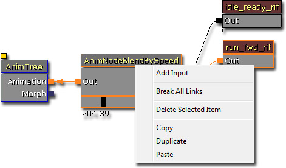
默认情况下，动画节点将会在标题栏中设置动画节点类。您可以通过使用“Anim Node（动画节点）”属性类别中的 Node Name（节点名称） 属性更改它。也可以使用 Node Name（节点名称��� 识别 Unrealscript 中的动画节点；所以如果您希望在运行时引用动画节点，那么请尝试为动画节点使用唯一的名称。但是，不强制使用位移的动画节点名称。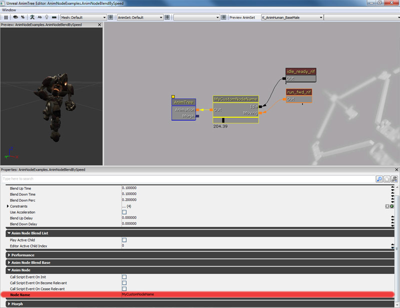
在 Unrealscript 中引用动画节点
var Name AnimNodeBlendListName;
var AnimNodeBlendList AnimNodeBlendList;
var array<AnimNodeBlendList> AllAnimNodeBlendLists;
/*
* 在为将这个 Actor 作为它的 Owner 的给定 SkeletalMeshComponent 初始化 AnimTree 后进行调用
* 这是适合缓存对 Actor 可以修改的骨架控制器等等的引用的地方
*/
event PostInitAnimTree(SkeletalMeshComponent SkelComp)
{
local AnimNodeBlendList LocalAnimNodeBlendList;
if (SkelComp == None)
{
return;
}
if (AnimNodeBlendListName != '' && AnimNodeBlendListName != 'None')
{
// 根据名称搜索动画节点混合列表。
AnimNodeBlendList = AnimNodeBlendList(SkelComp.FindAnimNode(AnimNodeBlendListName));
if (AnimNodeBlendList == None)
{
`Warn("AnimNodeBlendList is none.");
}
}
else
{
// 根据类搜索所有动画节点混合列表。
ForEach SkelComp.AllAnimNodes(class'AnimNodeBlendList', LocalAnimNodeBlendList)
{
AllAnimNodeBlendLists.AddItem(LocalAnimNodeBlendList);
}
}
}
simulated event Destroyed()
{
Super.Destroyed();
AnimNodeBlendList = None;
AllAnimNodeBlendLists.Length = 0;
}
AnimTree 从属关系
有关 AnimTree 从属关系的简要说明。拥有这个骨架网格物体组件的 actor，实例化这个 AnimTree 的是这个 AnimTree 的 actor 所有者。这是要记住的重点，因为一些动画节点会在 AnimTree 的 actor 拥有者中查找变量。未分类的节点
AnimNodeAimOffset(瞄准偏移动画节点)
在游戏中，您通常想让角色所持的武器指向玩家瞄准的地方。因为Pawn是通过碰撞圆柱体定义的，它仅能围绕Yaw(偏转)轴旋转，不能围绕Pitch(倾斜)轴或Roll(旋转)轴，所以很难轻松地旋转pawn使它对准玩家的目标。即使这样，您可能还想让角色的脚步仍然保持在原位。 红色的箭头显示了pawn的旋转度，由红色的碰撞圆柱体代表它。绿色的箭头显示了玩家的瞄准目标 我们可以将瞄准方向定义为从Actor的基础旋转度上进行相对旋转而得到的方向。
 AnimNodeAimOffset取入一个没有目标偏移(枪指向前方)的动画作为输入。AnimNodeAimOffset节点可以通过添加一个旋转偏移和平移偏移的组合来改变几个骨骼。这些偏移通过这9个姿势定义：
AnimNodeAimOffset取入一个没有目标偏移(枪指向前方)的动画作为输入。AnimNodeAimOffset节点可以通过添加一个旋转偏移和平移偏移的组合来改变几个骨骼。这些偏移通过这9个姿势定义：
- Center Center(居中) - 动画姿势直接向前方瞄准，没有倾斜或偏转调整。

- Center Up - 动画姿势瞄准向正上方，没有偏转调整。

- Center Down - 动画姿势瞄准向正下方，没有偏转调整。
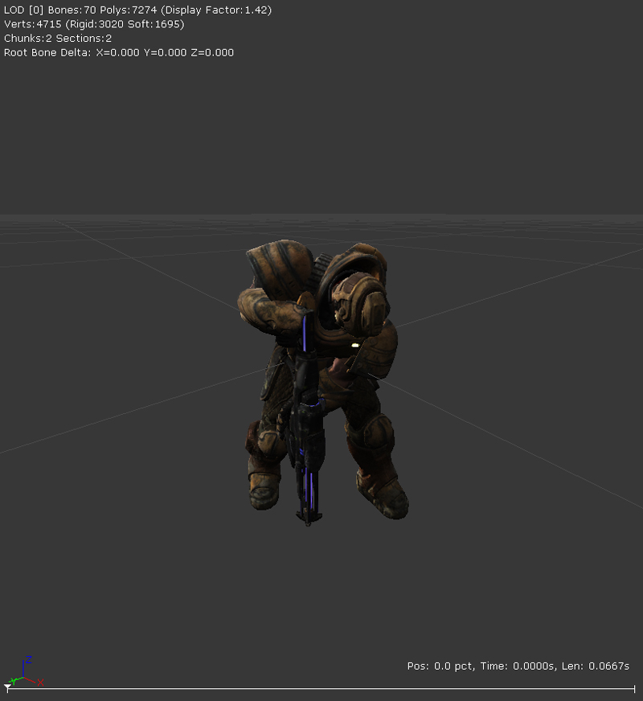
- Left Center - 动画姿势瞄准向左方，没有倾斜调整。
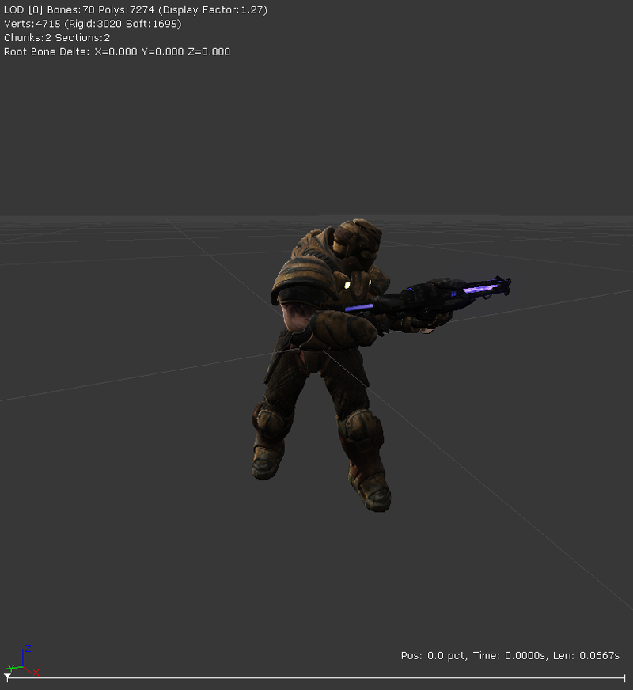
- Left Up - 动画姿势瞄准向左上方。

- Left Down - 动画姿势瞄准向左下方。
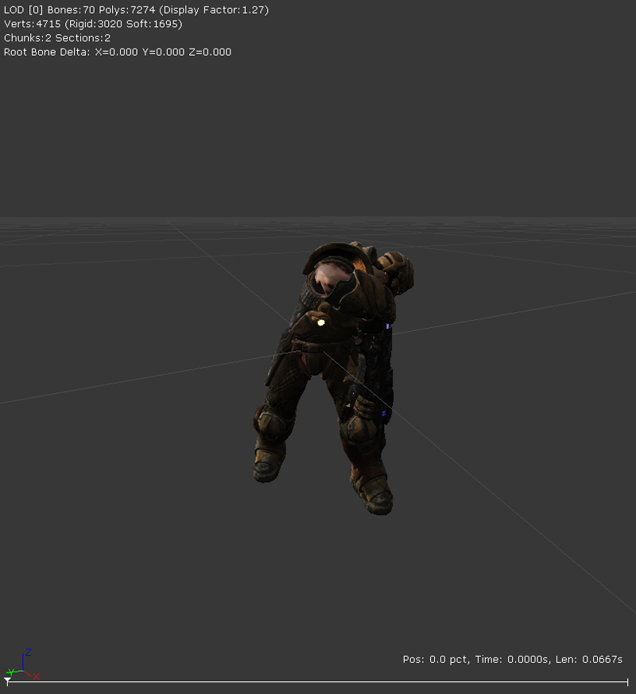
- Right Center - 动画姿势瞄准向右方，没有倾斜调整。
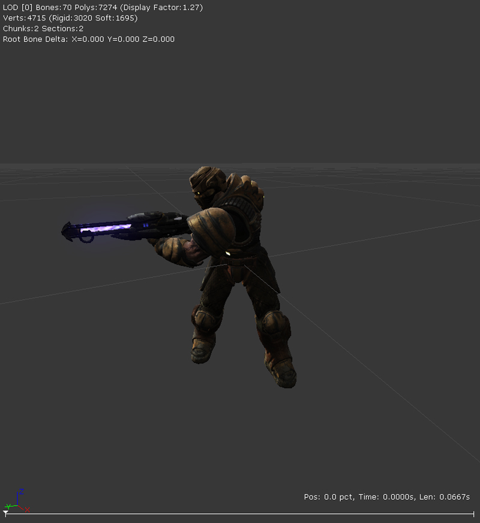
- Right Up - 动画姿势瞄准向右上方。
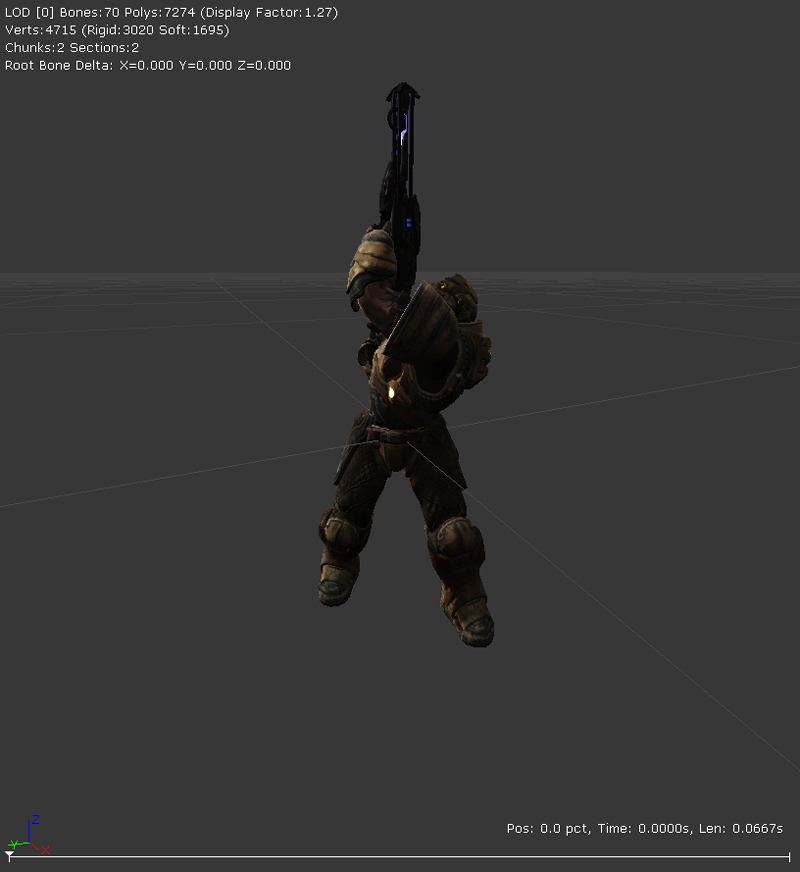
- Right Down - 动画姿势瞄准向右下方。
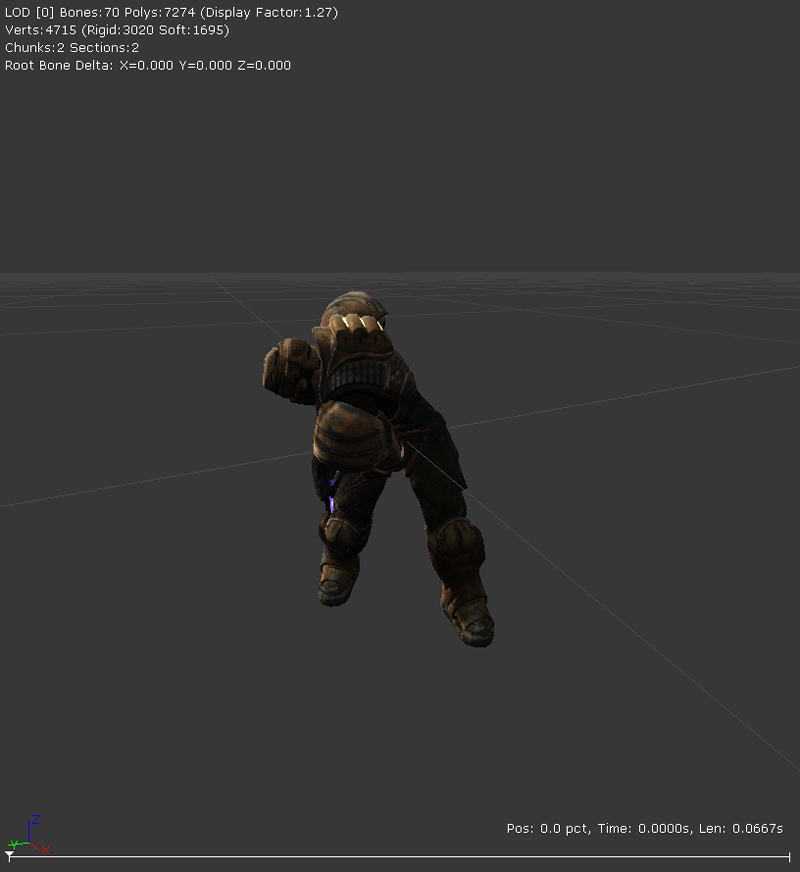
然后这9个姿势会使用双线性插值进行混合。这允许动画设计人员设计针对任何方向的网格物体姿势以便进行使用，比如瞄准或者头部外观。平移是在Actor Space(Actor的空间)中完成的，所以局部骨骼的旋转不会影响瞄准的结果。因此，您可以让角色持着武器运动，并且仍然可以精确地瞄准。
- 动画树编辑器中的AnimNodeAimOffset(瞄准偏移动画节点)。双击该动画节点弹出AimOffset(动画偏移)编辑器。
- 一个二维的可拖拽滑块，用于在动画树编辑器的实时视口中查看AnimNodeAimOffset的混合结果。
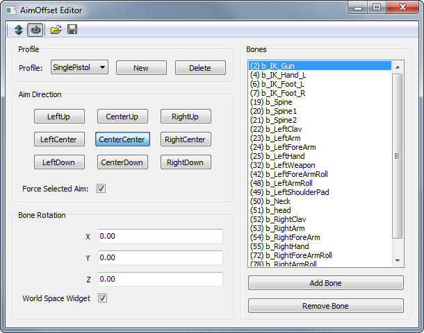
AimOffset编辑器用于创建AnimNodeAimOffset节点所使用的AimOffset的概要信息。 9个姿势基本上定义了一个长方形。AnimNodeAimOffset节点使用一个单位化的相对瞄准偏移来确定使用哪个姿势。X、Y轴上的范围是： [-1;-1]到[+1;+1]。所以如果瞄准值为[0,0]，则精确地在CenterCenter(中央)，[+1,0]将是RightCenter(右中)，[+0.5,0]则处于CenterCenter (中央)和RightCenter(右中)的中间位置。使用 AimOffset 编辑器
当使用编辑器时，第一件事便是创建一个新的profile(概要信息)。在Profile部分，点击"New(新建)"，并输入profile名称。您可以基于每个节点添加多个profiles及删除它们。在上面的工具条上，请注意"Open(打开)"和"Save( 保存)"图标，这些图标可以使您导入及保存profiles。 一旦创建好了一个profile，下一步便是选择要影响的骨骼。这个已通过点击AimOffset(瞄准偏移)编辑器上的"Add Bone(添加骨骼)"按钮来实现。选中骨骼将会按照增量顺序显示它们的索引及名称。 一旦选中了相关骨骼，对于每个骨骼您都可以编辑偏移量来制作那9种姿势。可以通过在Bones(骨骼)组合框点击骨骼的名称来选中骨骼。可以通过点击Aim Direction(瞄准方向)组中的相关按钮来选中一个姿势(或瞄准方向)。 上面的Aim Direction(动画方向)组是一个工具条，用于选择或者Bone Translation(骨骼平移)或Bone Rotation(骨骼旋转)来进行编辑。切换这些按钮将会在实时视口中显示一些相应的控件用于交互式的编辑。"World Space Widget(世界空间)"控件复选框可以在本地空间控件编辑和世界空间编辑之间进行切换。也提供了一些编辑文本域来用于直接的输入数值。通过动画烘焙偏移
除了手动地输入偏移或者使用控件工具外，您也可以从动画中提取偏移。为了完成这个目的，请先跳转到节点的属性部分，展开Profiles部分，选择您想编辑的profile索引，您将会看到几个命名为AnimName_XX的变量，这里的XX和9个方向相对应。设置您想使用的动画的名称，然后切换 bBakeFromAnimations 属性。您不必把动画分配给全部的9个姿势，但是您至少需要把动画分配给 Center Center ，因为这是一个参考姿势，用于提取偏移。当选中 bBakeFromAnimations 后，节点将会根据姿势XX和参考姿势CC的不同来提取偏移。AnimNodeAimOffset（瞄准偏移动画节点）参数
- Aim（瞄准）
- X - 单位化水平动画偏移。
- Y - 单位化垂直动画偏移。
- Angle Offset（角偏移）
- X - 在进行处理之前附加给 Aim 的水平动画偏移。
- Y - 在进行处理之前附加给 Aim 的垂直动画偏移。
- ForceAimDir - 使用 ForcedAimDir ，否则根据 Aim 和 Angle Offset 处理输出。
- Bake From Animations - 勾选该选项后，将会通过动画对偏移进行烘焙。
- ForcedAimDir - 强制的动画姿势。
- Profiles（分布图）
- Profile Name - 分布图的名称，由 AnimOffset 编辑器进行设置。
- Horizontal Range（水平范围）
- X - 最小水平目标。
- Y - 最大水平目标。
- Vertical Range（垂直范围）
- X - 最小垂直目标。
- Y - 最大垂直目标。
- Anim Name LU - 可以表现游戏角色向左上方瞄准 / 看的动画。
- Anim Name LC - 可以表现游戏角色向左瞄准 / 看的动画。
- Anim Name LD - 可以表现游戏角色向左下方瞄准 / 看的动画。
- Anim Name CU - 可以表现游戏角色向上瞄准 / 看的动画。
- Anim Name CC - 可以表现游戏角色向前瞄准 / 看的动画。
- Anim Name CD - 可以表现游戏角色向下瞄准 / 看的动画。
- Anim Name RU - 可以表现游戏角色向右上方瞄准 / 看的动画。
- Anim Name RC - 可以表现游戏角色向右瞄准 / 看的动画。
- Anim Name RD - 可以表现游戏角色向下瞄准 / 看的动画。
在游戏中应用该节点
使用这个节点需要程序员的协助。您或者需要在代码中引用每个节点，并使Pawn直接修改单位化的Aim参数，或者创建一个该节点的自定义子类。 注意，如果您引用了动画节点，那么当销毁Actor时需要清除它们，否则将不会对它们进行垃圾回收。 当然，节点将保存最后修改的profile。在游戏播放过程中通过从脚本 中调用函数::SetActiveProfileByName(), 或:: SetActiveProfileByIndex()来切换profile是可能的。 这段代码会向您说明如何创建一个会看着玩家的 pawn 的 pawn。
var(Pawn) float ViewYawMin;
var(Pawn) float ViewYawMax;
var(Pawn) float AimSpeed;
var AnimNodeAimOffset AimNode;
var Rotator DesiredAim;
var Rotator CurrentAim;
simulated event PostInitAnimTree(SkeletalMeshComponent SkelComp)
{
AimNode = AnimNodeAimOffset(SkelComp.FindAnimNode('AimNode'));
}
simulated event Destroyed()
{
Super.Destroyed();
AimNode = None;
}
simulated function Tick(float DeltaTime)
{
local PlayerController PlayerController;
Super.Tick(DeltaTime);
PlayerController = GetALocalPlayerController();
if (PlayerController != None && PlayerController.Pawn != None && AimNode != None)
{
DesiredAim = Rotator(Normal(Location - PlayerController.Pawn.Location));
DesiredAim.Pitch = Clamp(DesiredAim.Pitch, ViewPitchMin, ViewPitchMax);
DesiredAim.Yaw = Clamp(DesiredAim.Yaw, ViewYawMin, ViewYawMax);
if (DesiredAim != CurrentAim)
{
CurrentAim = RLerp(CurrentAim, DesiredAim, AimSpeed * DeltaTime, false);
}
// 调整俯仰（即绕Y轴的转动动作）
if (CurrentAim.Pitch < 0)
{
AimNode.Aim.Y = Abs(float(CurrentAim.Pitch) / ViewPitchMax);
}
else if (CurrentAim.Pitch > 0)
{
AimNode.Aim.Y = float(CurrentAim.Pitch) / ViewPitchMin;
}
else
{
AimNode.Aim.Y = 0.f;
}
// 调整偏转（即绕Z轴的转动动作）
if (CurrentAim.Yaw > 0)
{
AimNode.Aim.X = float(CurrentAim.Yaw) / ViewYawMax;
}
else if (CurrentAim.Yaw < 0)
{
AimNode.Aim.X = Abs(float(CurrentAim.Yaw) / ViewYawMin) * -1.f;
}
else
{
AimNode.Aim.X = 0.f;
}
}
}
simulated function SetWeapAnimType(EWeapAnimType AnimType)
{
if (AimNode != None)
{
switch(AnimType)
{
case EWAT_Default:
AimNode.SetActiveProfileByName('Default');
break;
case EWAT_Pistol:
AimNode.SetActiveProfileByName('SinglePistol');
break;
case EWAT_DualPistols:
AimNode.SetActiveProfileByName('DualPistols');
break;
case EWAT_ShoulderRocket:
AimNode.SetActiveProfileByName('ShoulderRocket');
break;
case EWAT_Stinger:
AimNode.SetActiveProfileByName('Stinger');
break;
}
}
}
defaultproperties
{
}
武器瞄准问题
动画树使用Forward Kinematics (FK)(正运动学)来混合动画，这将在骨骼定位很重要的地方进行插值时出现问题。并且更加不幸的是，这种情况恰好存在于武器瞄准中。以下的图片显示了Forward Kinematics(正运动学) 和 Inverse Kinematics (IK)(逆运动学)之间的不同，这对于理解这个问题十分必要的。 当使用FK混合两个动画时，对骨骼的旋转进行插值。在武器瞄准中，这导致左手和右手都发生偏离。有几种方式来解决这个问题。其中的一种方法是把左手粘合到右手的固定偏移处，尽管这样并没有真正的修复左手的偏离问题。我们真正想得到的是在手部的最终位置进行插值，并从那里决定手臂的位置，这样两个手便可以一起对齐。所以我们需要使用Inverse Kinematics (IK)(逆运动学)来使它正常的工作。
由于性能原因，瞄准节点没有提供内置的IK选项，因为评估每个单独的Aim节点的代价是非常昂贵的。然而，可以通过使用特殊的骨架层次结构来修复这个问题。可以创建"IK Bones(IK骨骼)"(根骨骼的直接子节点)，它仅能通过平移使其运动，并且可以逐帧地匹配手部的位置。当现在有不同的动画进行混合时，默认情况下将使用FK混合(因为它们使用旋转)；IK骨骼则使用IK混合(因为它们使用平移)。通过使用一个SkelControlLimb(简单的2个骨骼IK solver骨骼控制器)并根据需要触发它，这使得任意地在FK和IK间进行切换成为可能。骨骼控制器被用为某种后期处理效果，仅处理一次，而不是对树中的每个Aim都进行处理。
当使用FK混合两个动画时，对骨骼的旋转进行插值。在武器瞄准中，这导致左手和右手都发生偏离。有几种方式来解决这个问题。其中的一种方法是把左手粘合到右手的固定偏移处，尽管这样并没有真正的修复左手的偏离问题。我们真正想得到的是在手部的最终位置进行插值，并从那里决定手臂的位置，这样两个手便可以一起对齐。所以我们需要使用Inverse Kinematics (IK)(逆运动学)来使它正常的工作。
由于性能原因，瞄准节点没有提供内置的IK选项，因为评估每个单独的Aim节点的代价是非常昂贵的。然而，可以通过使用特殊的骨架层次结构来修复这个问题。可以创建"IK Bones(IK骨骼)"(根骨骼的直接子节点)，它仅能通过平移使其运动，并且可以逐帧地匹配手部的位置。当现在有不同的动画进行混合时，默认情况下将使用FK混合(因为它们使用旋转)；IK骨骼则使用IK混合(因为它们使用平移)。通过使用一个SkelControlLimb(简单的2个骨骼IK solver骨骼控制器)并根据需要触发它，这使得任意地在FK和IK间进行切换成为可能。骨骼控制器被用为某种后期处理效果，仅处理一次，而不是对树中的每个Aim都进行处理。
AnimNodeBlend(混合动画节点)
这是一个可以将两个输入混合在一起的简单混合节点。您可以指定想要得到的混合目标以及要混合到最终权重所需要的时间（以秒为单位）。
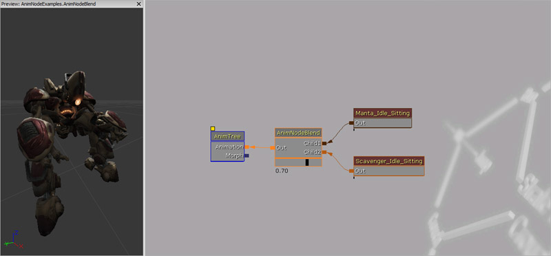
属性
- Skip Blend When Not Rendered - 会在骨架网格物体没有进行渲染的时候跳过这个混合指令。
UnrealScript 函数
- SetBlendTarget(float BlendTarget, float BlendTime) - 会设置这个混合节点的预期平衡状态。
- BlendTarget - 要加到第二个输入上的权重的目标量。这个值应该介于 0.f 和 1.f 之间。
- BlendTime - 获得混合目标所需的时间。
在虚幻脚本中如何使用
下面的示例将会说明如何使用半秒钟的混合时间在 Child 1 和 Child 2 之间进行混合。
var AnimNodeBlend AnimNodeBlend;
simulated event Destroyed()
{
Super.Destroyed();
AnimNodeBlend = None;
}
simulated event PostInitAnimTree(SkeletalMeshComponent SkelComp)
{
AnimNodeBlend = AnimNodeBlend(SkelComp.FindAnimNode('AnimNodeBlend'));
}
simulated event Tick(float DeltaTime)
{
Super.Tick(DeltaTime);
if (AnimNodeBlend == None)
{
return;
}
if (AnimNodeBlend.BlendTimeToGo <= 0.f)
{
AnimNodeBlend.SetBlendTarget((AnimNodeBlend.Child2Weight >= 1.f) ? 0.f : 1.f, 0.5f);
}
}
defaultproperties
{
}
AnimNodeCrossfader(交叉淡入淡出动画节点)
这个混合节点允许动画树通过脚本控制在两个动画之间进行交叉淡入淡出。典型的使用方案是在两个玩家闲散动画之间进行混合。这个混合节点需要2个AnimNodeSequences作为输入，您无法连接任何其他类型的动画混合节点。
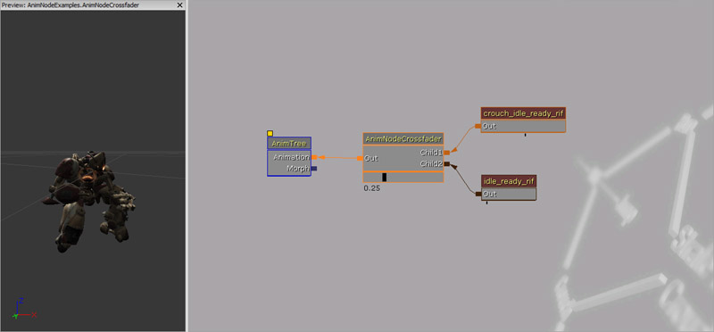
属性
- Default Anim Seq Name - 要在启动时候播放的默认动画序列。
UnrealScript 函数
- PlayOneShotAnim(name AnimSeqName, optional float BlendInTime, optional float BlendOutTime, optional bool bDontBlendOut, optional float Rate) - 播放一段一遍帧动画。
- AnimSeqName - 要播放的动画序列的名称。
- BlendInTime - 要从当前动画混合到这个（新）动画的时间。
- BlendOutTime - 要从这个动画（在它完成播放之前）混合返回到前面一个动画的时间。
- bDontBlendOut - 如果它为true，那么动画会在最后一帧冻结，并且不会混合返回到之前的动画。
- Rate - 动画的播放速率。
- BlendToLoopingAnim(name AnimSeqName, optional float BlendInTime, optional float Rate) - 淡入循环动画
- AnimSeqName - 要播放的动画序列的名称。
- BlendInTime - 要从当前动画混合到这个（新）动画的时间。
- Rate - 动画的播放速率。
- GetAnimName() - 返回当前正在播放的动画的名称
- GetActiveChild() - 返回当前处于激活状态的激活AnimNodeSequence。
在虚幻脚本中如何使用
该代码段会显示如何通过四分之一秒的混合时间在 LoopingAnimNames 数组中定义的两个不同的循环动画之间进行交叉淡入淡出。
var(Pawn) array<Name> LoopingAnimNames;
var AnimNodeCrossfader AnimNodeCrossfader;
var float NextBlendTime;
simulated event Destroyed()
{
Super.Destroyed();
AnimNodeCrossfader = None;
}
simulated event PostInitAnimTree(SkeletalMeshComponent SkelComp)
{
AnimNodeCrossfader = AnimNodeCrossfader(SkelComp.FindAnimNode('AnimNodeCrossfader'));
}
simulated event Tick(float DeltaTime)
{
Super.Tick(DeltaTime);
if (AnimNodeCrossfader == None)
{
return;
}
if (WorldInfo.TimeSeconds >= NextBlendTime)
{
AnimNodeCrossfader.BlendToLoopingAnim(LoopingAnimNames[Rand(LoopingAnimNames.Length)], 0.25f, 1.f);
NextBlendTime = worldInfo.TimeSeconds + 2.f;
}
}
defaultproperties
{
}
AnimNodePlayCustomAnim(自定义播放动画节点)
这个混合节点可以提供代使用自定义动画码控制覆盖动画树分支。常规的分支是常规的树分支，例如上面的主体部分。必须将自定义分支连接到一个AnimNodeSequence。这样，混合节点才可以借用上面的主体部分播放各个参数已经给定的自定义动画。

UnrealScript 函数
- PlayCustomAnim(name AnimName, float Rate, optional float BlendInTime, optional float BlendOutTime, optional bool bLooping, optional bool bOverride) - 这个函数会回放动画。
- AnimName - 要播放的动画序列的名称。
- Rate - 动画回放速率。
- BlendInTime - 要混合该动画的时间（以秒为单位）。
- BlendOutTime - 要淡出该动画的时间（以秒为单位）。
- bLooping - 循环该动画。
- bOverride - 如果将同一个动画序列设置为再次播放，那么将会再次播放这个动画。否则，尝试播放同一个动画序列将不会有任何作用。
- PlayCustomAnimByDuration(name AnimName, float Duration, optional float BlendInTime, optional float BlendOutTime, optional bool bLooping, optional bool bOverride) - 该函数会使播放动画 x 秒时间这项操作变得更加容易。
- AnimName - 要播放的动画序列的名称。
- Duration - 这个动画应该播放的时间长度（以秒为单位）。
- BlendInTime - 要混合该动画的时间（以秒为单位）。
- BlendOutTime - 要淡出该动画的时间（以秒为单位）。
- bLooping - 循环该动画。
- bOverride - 如果将同一个动画序列设置为再次播放，那么将会再次播放这个动画。否则，尝试播放同一个动画序列将不会有任何作用。
- StopCustomAnim(float BlendOutTime) - 停止当前播放的动画。
- BlendOutTime - 要淡出该动画的时间（以秒为单位）。
- SetCustomAnim(Name AnimName) - 将当前播放的动画切换为另一个。
- AnimName - 动画序列的名称。
- SetActorAnimEndNotification(bool bNewStatus) - 启用或禁用OnAnimEnd()事件。
- bNewStatus - True或false可以决定启用或禁用该事件。
- GetCustomAnimNodeSeq() - 返回正在使用的AnimNodeSequence实例。
- SetRootBoneAxisOption(optional ERootBoneAxis AxisX, optional ERootBoneAxis AxisY, optional ERootBoneAxis AxisZ) - 设置供根骨骼运动使用的根骨骼坐标轴。
- AxisX - X轴。
- AxisY - Y轴。
- AxisZ - Z轴。
在虚幻脚本中如何使用
该代码段会显示如何使用AnimNodePlayCustomAnim节点。它会通过淡入淡出十分之一秒的时间回放 CustomAnimNames 中定义的随机动画。如果动画再次随机关闭，它还会回放同一个动画。
var(Pawn) array<Name> CustomAnimNames;
var AnimNodePlayCustomAnim AnimNodePlayCustomAnim;
simulated event Destroyed()
{
Super.Destroyed();
AnimNodePlayCustomAnim = None;
}
simulated event PostInitAnimTree(SkeletalMeshComponent SkelComp)
{
AnimNodePlayCustomAnim = AnimNodePlayCustomAnim(SkelComp.FindAnimNode('AnimNodePlayCustomAnim'));
}
simulated event Tick(float DeltaTime)
{
Super.Tick(DeltaTime);
if (AnimNodePlayCustomAnim == None)
{
return;
}
if (!AnimNodePlayCustomAnim.bIsPlayingCustomAnim)
{
AnimNodePlayCustomAnim.PlayCustomAnim(CustomAnimNames[Rand(CustomAnimNames.Length)], 1.f, 0.1f, 0.1f, false, true);
}
}
defaultproperties
{
}
AnimNodeScalePlayRate(缩放播放速率动画节点)
这个动画节点提供了动画树控制可以覆盖输入动画播放速率。这将会允许您在一个单独的地方缩放这个动画。
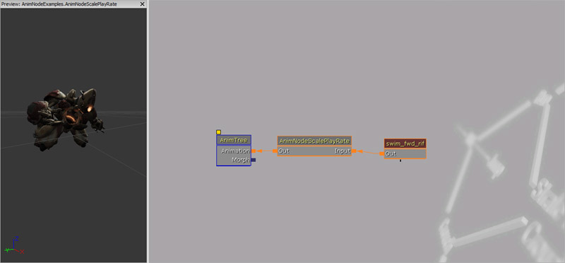
属性
- Scale By Value - 动画回放比例（百分数）。
在虚幻脚本中如何使用
该示例会显示如何使用AnimNodeScalePlayRate节点调节动画回放速率。使用Sin调整回放速率执行正弦回放节奏。
var(AnimTree) const Name ScalePlayRateAnimNodeName;
var(AnimTree) const float PlayRateOffset;
var AnimNodeScalePlayRate AnimNodeScalePlayRate;
simulated event PostInitAnimTree(SkeletalMeshComponent SkelComp)
{
if (ScalePlayRateAnimNodeName != '')
{
AnimNodeScalePlayRate = AnimNodeScalePlayRate(SkelComp.FindAnimNode(ScalePlayRateAnimNodeName));
}
}
simulated event Destroyed()
{
Super.Destroyed();
AnimNodeScalePlayRate = None;
}
simulated event Tick(float DeltaTime)
{
Super.Tick(DeltaTime);
AnimNodeScalePlayRate.ScaleByValue = (Sin(WorldInfo.TimeSeconds + PlayRateOffset) + 1) * 0.5f;
}
defaultproperties
{
}
AnimNodeScaleRateBySpeed(按速度缩放速率动画节点)
该动画节点提供了动画树控制可以根据所拥有的actor的速度大小覆盖输入动画播放速率。
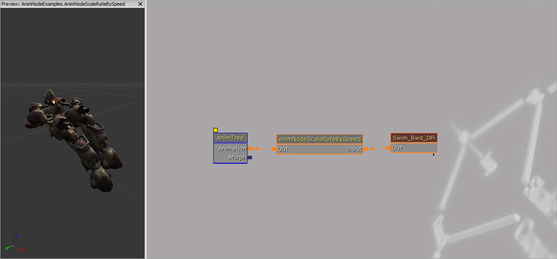
属性
- Base Speed - 在计算最终速度时使用的基本速度。例如，它应该等于您的pawn的最大速度；默认值为600.f。如果速度大小为600.f，那么播放速率为1.f或常规速度。如果速度大小为300.f，那么播放速率为0.5f或者是这个速度的一半。
在虚幻脚本中如何使用
该代码段中包含一个将会根据它所具有的健康值调整它的 GroundSpeed 的pawn。这个pawn被损坏后，它将会移动得更慢，动画也会回放得更慢。
event TakeDamage(int Damage, Controller InstigatedBy, vector HitLocation, vector Momentum, class<DamageType> DamageType, optional TraceHitInfo HitInfo, optional Actor DamageCauser)
{
Super.TakeDamage(Damage, InstigatedBy, HitLocation, Momentum, DamageType, HitInfo, DamageCauser);
GroundSpeed = default.GroundSpeed * (float(Health) / float(HealthMax));
}
defaultproperties
{
}
AnimNodeSlot(插槽动画节点)
这个AnimNodeSlot节点在这篇文章中的Matinee动画控制中也有说明，因为它可以与Matinee结合使用。 基本上这个节点创建一个插槽，该插槽允许Matinee、Unrealscript使用一个或多个动画来覆盖输入端的值。 设计这个节点的目的是根据需求播放动画，它不一定必须存在动画树中。最好的例子是通过代码来触发一个元素动画（休战、特殊的运动、激战、处刑、死亡等等）。这不仅允许我们保持动画树为一个合适的大小，而且也可以播放大量 一次性的/唯一的 动画。 AnimNodeSlots知道如何处理叠加型动画。默认情况下，它们把叠加型动画添加到源的输入端。但是它们也把叠加型动画当成普通动画数据对待，并执行一个切换(如果在您的树种有一个子仅用于处理叠加数据的子分支)。要使这个行为有效，需要设置bAdditiveAnimationsOverrideSource为 true。
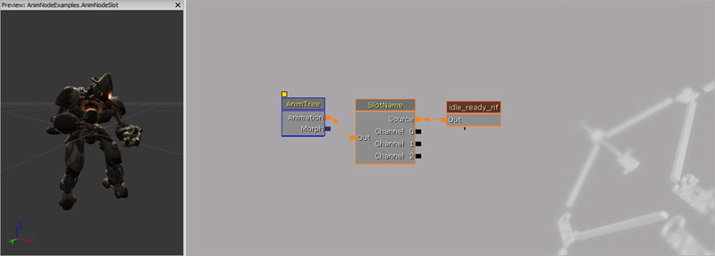
属性
- Early Anim End Notify - 如果该选项为 true，那么当我们开始淡出这个动画的时候在具有所有权actor上执行OnAnimEnd事件。这通常会改善过渡和淡出淡入，只要这个动画开始淡出的时候，我们就可以开始播放新的动画；而不用等到它完全淡出后。
- Skip Blend When Not Rendered - 不要在骨架网格物体不可用的时候进行淡出淡入。
- Additive Animations Override Source - 如果这一项为 true，那么附加的动画会覆盖源输入。否则，会将附加的动画添加给源输入。
UnrealScript 函数
- PlayCustomAnim(name AnimName, float Rate, optional float BlendInTime, optional float BlendOutTime, optional bool bLooping, optional bool bOverride, optional float StartTime, optional float EndTime)
- AnimName - 要播放的动画���名称。
- Rate - 播放动画应该采用的速率。
- BlendInTime - 要淡入这个动画的时间（以秒为单位）。
- BlendOutTime - 要淡出这个动画的时间（以秒为单位）。
- bLooping - 在被告知停止之前动画应该循环一直循环播放。
- bOverride - 只有在将该选项设置为 true 的情况下反复播放同一个动画。
- StartTime - 开始播放动画的时间（例如，在动画2秒钟的地方开始播放）。
- EndTime - 结束播放动画的时间（例如，在动画4秒钟的地方结束播放）。
- PlayCustomAnimByDuration(name AnimName, float Duration, optional float BlendInTime, optional float BlendOutTime, optional bool bLooping, optional bool bOverride) - 与上面的函数类似，只是允许您控制动画反复播放的时间长度（秒）。
- AnimName - 要播放的动画���名称。
- Duration - 动画应该播放的时间长度（秒）。
- BlendInTime - 要淡入这个动画的时间（以秒为单位）。
- BlendOutTime - 要淡出这个动画的时间（以秒为单位）。
- bLooping - 在被告知停止之前动画应该循环一直循环播放。
- bOverride - 只有在将该选项设置为 true 的情况下反复播放同一个动画。
- GetPlayedAnimation() - 会返回当前正在播放的动画的名称或者在没有播放动画的情况下返回 ''。
- StopCustomAnim(float BlendOutTime) - 停止播放自定义动画。
- BlendOutTime - 要淡出这个动画的时间（以秒为单位）。
- SetCustomAnim(Name AnimName) - 将当前播放的动画切换为另一个。
- AnimName - 要播放的动画���名称。
- SetActorAnimEndNotification(bool bNewStatus) - 启用或禁用OnAnimEnd()事件。
- bNewStatus - True或false可以决定启用或禁用该事件。
- GetCustomAnimNodeSeq() - 会返回当前为播放的动画选择的 AnimNodeSequence。
- SetRootBoneAxisOption(optional ERootBoneAxis AxisX, optional ERootBoneAxis AxisY, optional ERootBoneAxis AxisZ) - 设置自定义动画根骨骼选项。
- AxisX - X轴。
- AxisY - Y轴。
- AxisZ - Z轴。
- SetRootBoneRotationOption(optional ERootRotationOption AxisX, optional ERootRotationOption AxisY, optional ERootRotationOption AxisZ) - 设置自定义动画根旋转选项。
- AxisX - Roll（翻转）轴。
- AxisY - Yaw（偏离）轴。
- AxisZ - Pitch（倾斜）轴。
- AddToSynchGroup(name GroupName) - 将这个动画与其他动画同步。
- GroupName - 同步组名称。
- TickChildWeights(float DeltaSeconds) - 根据子代权重增加时间。
- DeltaSeconds - 增加子代权重的时间（秒）。
在虚幻脚本中如何使用
该代码段会显示如何在之前的动画播放一半的时候播放 CustomAnimNames 中定义的一个随机动画。只要 AnimNodeSlot 有足够的位置，它就可以在它们之间平滑过渡。
var(Pawn) array<Name> CustomAnimNames;
var AnimNodeSlot AnimNodeSlot;
var float NextAnimationTime;
simulated event Destroyed()
{
Super.Destroyed();
AnimNodeSlot = None;
}
simulated event PostInitAnimTree(SkeletalMeshComponent SkelComp)
{
AnimNodeSlot = AnimNodeSlot(SkelComp.FindAnimNode('AnimNodeSlot'));
}
simulated event Tick(float DeltaTime)
{
local float Duration;
Super.Tick(DeltaTime);
if (AnimNodeSlot == None)
{
return;
}
if (WorldInfo.TimeSeconds >= NextAnimationTime)
{
Duration = AnimNodeSlot.PlayCustomAnim(CustomAnimNames[Rand(CustomAnimNames.Length)], 1.f, 0.3f, 0.3f, false, true);
NextAnimationTime = WorldInfo.TimeSeconds + (Duration * 0.5f);
}
}
defaultproperties
{
}
AnimNodeSynch(同步动画节点)
AnimNodeSynch节点现在已经废除，并由AnimTree(动画树)节点(混合树的根节点)中的AnimGroup(动画组)系统所代替。请阅读动画概述页面获得更多的信息。AnimNodeSynch(同步动画节点)的功能仍然有效，但是对其提供的支持将会停止。我们推荐您转换过来使用新的系统。 下面的屏幕截图会演示如何将新的动画组添加到 Anim Tree（动画树）中。
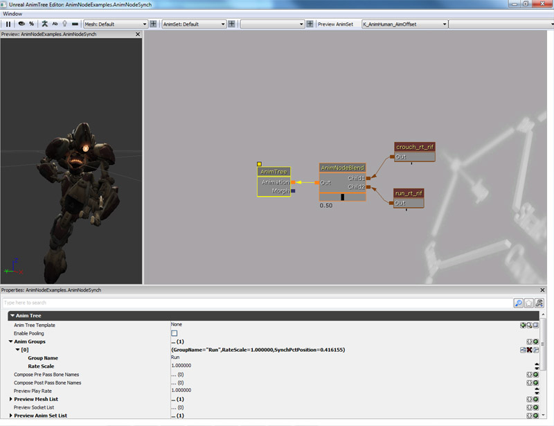
只要您完成了动画组设置，您就需要将动画节点序列设置为动画组的一部分。
UDKAnimBlendByDriving / UTAnimBlendByDriving
该节点会自动混合到‘驾驶’分支，前提是所有者正在驾驶载具，或者他是正在被驾驶的载具。

UnrealScript 函数
- UpdateDrivingState() - 强制更新驾驶状态。如果动画混合当前不相关，那么可以使用这一项，因此没有勾记。
UDKAnimBlendByHoverboardTilt / UTAnimBlendByHoverboardTilt
该节点会自动在分支之间混合，以便反映玩家在悬浮板上的显示状态。
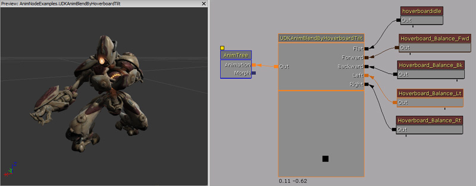
属性
- TiltScale - 调整倾斜的权重。
- TiltDeadZone - 如果翻转幅度在这个值之下，那么该节点会混合到‘Flat（平面）’分支。
- TiltYScale - 调整在计算倾斜角度中使用的向上向量。
UDKAnimBlendByHoverboardTurn / UTAnimBlendByHoverboardTurn
该节点会自动在分支之间混合，以便反映玩家在悬浮板上的翻转状态。

属性
- TurnScale - 调整翻转速度，这个速度可以调整最终的权重。
- MaxBlendPerSec - 设置每秒的最大混合更改，它可以调整分支混合的速度。
UDKAnimBlendBySpeed / UTAnimBlendBySpeed
该节点会根据这个骨架网格物体组件的拥有者的速度自动‘Slow（慢速）’和‘Fast（快速）’之间进行混合。这是 AnimBlendBySpeed 的简化版本。

属性
- MinSpeed - 最小速度；在位于这个速度或低于这个速度时，节点会混合为‘Slow（慢速）’分支。
- MaxSpeed - 最大速度；在位于这个速度或高于这个速度时，节点会混合为‘Fast（快速）’分支。
UDKAnimNodeCopyBoneTranslation / UTAnimNodeCopyBoneTranslation
这个节点会自动复制骨骼变换，这样可以允许 AnimTree 仿真不同类型的武器装配。将该节点与 AnimNodeAimOffset、UDKAnimNodeSeqWeap / UTAnimNodeSeqWeap 和 UDKAnimBlendByWeapType / UTAnimBlendByWeapType 结合在一起使用。该节点会检测附加的目标节点中的分布图更改，然后更新分布图更新的所有连接的 UDKAnimNodeSeqWeap / UTAnimNodeSeqWeap 和 UDKAnimBlendByWeapType / UTAnimBlendByWeapType 节点。它还会将源骨骼变换复制到目标骨骼变换中。
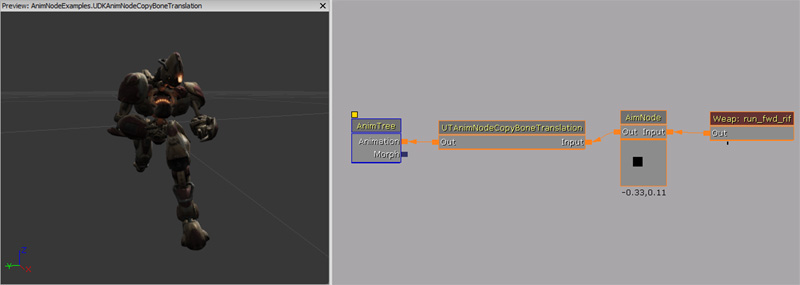
属性
- DefaultBoneCopyArray - 源和目标骨骼名称的数组。
- SrcBoneName - 获得骨骼变换的源骨骼名称。
- DstBoneName - 要设置骨骼变换的目标骨骼名称。
- DualWieldBoneCopyArray - 在 AnimNodeAimOffset 概要文件被命名为'DualPistols'的情况下要使用的源和目标骨骼名称的数组。
- SrcBoneName - 获得骨骼变换的源骨骼名称。
- DstBoneName - 要设置骨骼变换的目标骨骼名称。
UDKAnimNodeJumpLeanOffset / UTAnimNodeJumpLeanOffset
该节点的作用方式与AnimNodeAimOffset十分相近，只是它还会使用其他AnimNodeAimOffset的目标作为方向。该节点用于手动插入值，这样玩家的角色就会看起来好像角色正在跳或倒下的时候它所倾斜的方向是正确的。

属性
- JumpLeanStrength - 激活‘跳动倾斜度’节点的数量。
- MaxLeanChangeSpeed - 倾斜度可以进行改变的速度。
- bMultiplyByZVelocity - 我们是否应该在下降的时候倒置倾斜程度。
- bDodging - 如果玩家正在躲闪，那么由 native 代码进行设置。当这个选项为true的时候，它会将它自己的概要文件更改为ControllerName_DBLJUMP。
- bDoubleJumping - 如果玩家正在进行二级跳，那么由native代码进行设置。当这个选项为true的时候，它会将它自己的概要文件更改为ControllerName_DODGE。
UnrealScript 函数
- SetLeanWeight(float WeightTarget, float BlendTime) - 允许随着时间淡入并淡出倾斜。
- WeightTarget - 希望得到的权重目标。
- BlendTime - 混合为希望得到的权重目标所需要的时间（秒）。
在虚幻脚本中如何使用
class ExampleUDKAnimNodeJumpLeanOffset extends Pawn
placeable;
var UDKAnimNodeJumpLeanOffset UDKAnimNodeJumpLeanOffset;
var bool Flipper;
simulated event Destroyed()
{
Super.Destroyed();
UDKAnimNodeJumpLeanOffset = None;
}
simulated event PostInitAnimTree(SkeletalMeshComponent SkelComp)
{
UDKAnimNodeJumpLeanOffset = UDKAnimNodeJumpLeanOffset(SkelComp.FindAnimNode('UDKAnimNodeJumpLeanOffset'));
if (UDKAnimNodeJumpLeanOffset != None)
{
SetLeanWeight();
SetTimer(1.f, true, NameOf(SetLeanWeight));
}
}
simulated event SetLeanWeight()
{
if (UDKAnimNodeJumpLeanOffset != None)
{
UDKAnimNodeJumpLeanOffset.SetLeanWeight((Flipper) ? 0.f : 1.f, 0.2f);
Flipper = !Flipper;
}
}
defaultproperties
{
Begin Object Class=SkeletalMeshComponent Name=PawnMesh
End Object
Mesh=PawnMesh
Components.Add(PawnMesh)
Begin Object Name=CollisionCylinder
CollisionRadius=+0030.0000
CollisionHeight=+0072.000000
End Object
}
过滤器
AnimNode_MultiBlendPerBone(动画节点_基于每个骨骼混合)
这个混合节点允许您创建有属于它们自己的每个骨骼混合和输入源。您可以在不同的混合权重将任何数量的蒙板结合在一起，并且可以根据您设计的规则自动启用或禁用它们。不过，不需要这么做，这个混合节点可以使用虚幻脚本进行控制。这个混合节点会通过将它的功能压缩到一个单独的混合节点减少节点的数量。

属性
- Mask List - 列出这个混合节点的所有蒙板。
- Branch List - 骨骼名称及它们对于一个指定蒙板的特定权重的数列。
- Bone Name - 使用混合方法的骨骼的名称。
- Per Bone Weight Increase - 应用到这个骨骼上的蒙板权重的百分比。
- Desired Weight - 想要设置给这个蒙板的权重。
- Blend Time To Go - 在这个蒙板中进行混合时所剩下的时间（以秒为单位）。这个选项在AnimTree编辑器中没有什么用。
- Weight Rule List - 将会自动启用或禁用这个蒙板的规则。
- Node Name - 要检查的节点的名称。
- Weight Check - 权重应该如何检查。
- Child Index - 要检查权重的节点的子索引。
- Weight Based On Node Rules - 这个蒙板的权重是根据权重规则计算的吗？
- Disable For Non Local Human Players - 如果所有者不是本地人类玩家，那么忽略这个分支。
- Branch List - 骨骼名称及它们对于一个指定蒙板的特定权重的数列。
- Rotation Blend Type - 旋转应该如何混合。
UnrealScript 函数
- SetMaskWeight(int MaskIndex, float DesiredWeight, float BlendTime) - 会控制指定蒙板的权重。
- MaskIndex - 要应用属性的蒙板的索引。
- DesiredWeight - 要赋给这个蒙板的权重。
- BlendTime - 蒙板淡入的时间（以秒为单位）。
在虚幻脚本中如何使用
var AnimNode_MultiBlendPerBone AnimNode_MultiBlendPerBone;
var float NextBlendTime;
var int PreviousMaskIndex;
simulated event Destroyed()
{
Super.Destroyed();
AnimNode_MultiBlendPerBone = None;
}
simulated event PostInitAnimTree(SkeletalMeshComponent SkelComp)
{
AnimNode_MultiBlendPerBone = AnimNode_MultiBlendPerBone(SkelComp.FindAnimNode('AnimNode_MultiBlendPerBone'));
}
simulated event Tick(float DeltaTime)
{
local int NewMaskIndex;
Super.Tick(DeltaTime);
if (AnimNode_MultiBlendPerBone == None)
{
return;
}
if (WorldInfo.TimeSeconds >= NextBlendTime)
{
AnimNode_MultiBlendPerBone.SetMaskWeight(PreviousMaskIndex, 0.f, 0.25f);
NewMaskIndex = Rand(AnimNode_MultiBlendPerBone.MaskList.Length);
AnimNode_MultiBlendPerBone.SetMaskWeight(NewMaskIndex, 1.f, 0.25f);
PreviousMaskIndex = NewMaskIndex;
NextBlendTime = worldInfo.TimeSeconds + 2.f;
}
}
defaultproperties
{
}
AnimNodeBlendMultiBone(混合多个骨骼动画节点)
这个动画节点已经过期，不应该再使用。
AnimNodeBlendPerBone(基于每个骨骼混合的动画节点)
这个节点和AnimNodeBlend一样，您仅可以基于每个骨骼来控制两个子动画如何混合到一起。这个节点的实质功能是每个骨骼的蒙板或过滤器。比如，Child 1有腿，Child 2有上部躯干。BranchStartBoneName数组包含了您想对Child 1隐藏的骨骼父项以及从Child2中获取的骨骼父项。对于上面的例子，您把骨骼名称Spine1放到那个数组中，它将可以负责整个的上部躯干。

属性
- Force Local Space Blend - 如果这个选项为true，那么在本地空间进行混合，而不是世界空间。它可能会帮助从Source（源）输入中保留一些动画。
- Branch Start Bone Name - 开始进行混合的骨骼名称的数列（影响它及其子代）。如果您想要影响骨架的多个脱节部分，您可以在这里定义了多个骨骼名称。
UnrealScript 函数
- SetBlendTarget(float BlendTarget, float BlendTime) - 设置混合目标允许您淡入及淡出骨骼效果。
- BlendTarget - 要进行混合的目标。应该是0或1。
- BlendTime - 进行混合的时间。
在虚幻脚本中如何使用
var AnimNodeBlendPerBone AnimNodeBlendPerBone;
var float NextBlendTime;
var bool BlendToChildTwo;
simulated event Destroyed()
{
Super.Destroyed();
AnimNodeBlendPerBone = None;
}
simulated event PostInitAnimTree(SkeletalMeshComponent SkelComp)
{
AnimNodeBlendPerBone = AnimNodeBlendPerBone(SkelComp.FindAnimNode('AnimNodeBlendPerBone'));
}
simulated event Tick(float DeltaTime)
{
Super.Tick(DeltaTime);
if (AnimNodeBlendPerBone == None)
{
return;
}
if (WorldInfo.TimeSeconds >= NextBlendTime)
{
BlendToChildTwo = !BlendToChildTwo;
AnimNodeBlendPerBone.SetBlendTarget((BlendToChildTwo) ? 1 : 0, 0.25f);
NextBlendTime = WorldInfo.TimeSeconds + 2.f;
}
}
defaultproperties
{
}
UDKAnimBlendBySlotActive / UTAnimBlendBySlotActive
如果连接的AnimNodeSlot播放的是一个自定义动画或它当前的混合时间超过0，那么节点只会全部混合到Slot节点。如果您想要AnimTree自动检测连接的AnimSlot是否在播放动画，可以使用这个混合节点，如果是在播放动画，那么它会自动混合它。这样允许程序人员只获取AnimNodeSlot播放动画而AnimTree可以自动进行淡入。这样做的好处是回放会强烈地表现播放器可以触发。
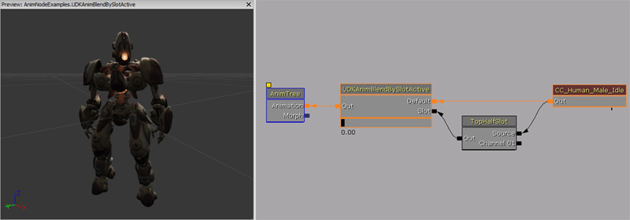
UDKAnimBlendByWeapon / UTAnimBlendByWeapon
该节点会在调用 AnimFire 的时候混合进入 'Firing（开火）' 分支。当连接的动画节点序列已经停止开火的时候，如果将bLooping设置为false，那么会调用AnimStopFire，否则连接的动画节点序列会将它的动画更改为循环动画序列，而且以循环的方式进行播放。
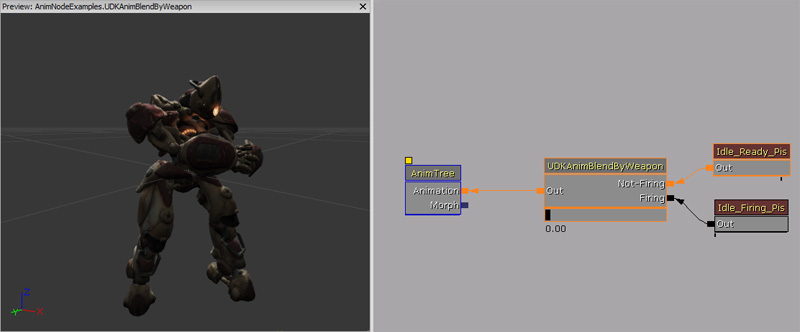
属性
- Looping - 这个武器播放的是一个循环的动画。
- Looping Anim - 如果已经进行设置，那么在开火动画完成后，会循环这个动画而不是循环开火动画。
- Blend Time - 动画混合时间。
UnrealScript 函数
- AnimFire(name FireSequence, bool bAutoFire, optional float AnimRate, optional float SpecialBlendTime, optional name LoopSequence = LoopingAnim) - 调用它触发开火序列。它会混合为开火动画。如果指定了bAutoFire，如果LoopSequence为 'None' 或未指定，那么会循环FireSequence，否则将会再放一次FireSequence，在这之后会循环LoopSequence。
- FireSequence - 用于关闭开火的动画序列的名称。
- bAutoFire - 将bLooping设置为这个值。
- AnimRate - 播放动画的速率。
- SpecialBlendTime - 如果已经设置，它会覆盖默认的BlendTime。
- LoopSequence - 用于循环的动画序列的名称。
- AnimStopFire(optional float SpecialBlendTime) - 淡出开火动画。会自动为非循环开火动画调用该事件；否则必须手动调用它。
- SpecialBlendTime - 如果已经设置，它会覆盖默认的BlendTime。
在虚幻脚本中如何使用
class ExampleUDKAnimBlendByWeapon extends Pawn;
// 开火武器动画的名称
var() const name FireSequenceName;
// 玩家手持一个自动的开火武器
var() const bool IsWeaponAutoFire;
// 动画播放速率
var() const float FirePlayRate;
// 重新加载开火动画的混合时间
var() const float FireBlendTime;
// 循环开火武器动画的名称
var() const name LoopingFireSequenceName;
var UDKAnimBlendByWeapon UDKAnimBlendByWeapon;
simulated event Destroyed()
{
Super.Destroyed();
UDKAnimBlendByWeapon = None;
}
simulated event PostInitAnimTree(SkeletalMeshComponent SkelComp)
{
UDKAnimBlendByWeapon = UDKAnimBlendByWeapon(SkelComp.FindAnimNode('UDKAnimBlendByWeapon'));
if (UDKAnimBlendByWeapon != None)
{
FireWeapon();
}
}
simulated function FireWeapon()
{
if (UDKAnimBlendByWeapon != None)
{
// 开始开火动画
UDKAnimBlendByWeapon.AnimFire(FireSequenceName, IsWeaponAutoFire, FirePlayRate, FireBlendTime, LoopingFireSequenceName);
// 一秒钟之后，停止开火
SetTimer(1.f, false, NameOf(StopFireWeapon));
}
}
simulated function StopFireWeapon()
{
if (UDKAnimBlendByWeapon != None)
{
// 停止开火动画
UDKAnimBlendByWeapon.AnimStopFire(FireBlendTime);
// 半秒钟之后重新开始开火
SetTimer(0.5f, false, NameOf(FireWeapon));
}
}
defaultproperties
{
Begin Object Class=SkeletalMeshComponent Name=PawnMesh
End Object
Mesh=PawnMesh
Components.Add(PawnMesh)
Begin Object Name=CollisionCylinder
CollisionRadius=+0030.0000
CollisionHeight=+0072.000000
End Object
}
UDKAnimBlendByWeapType / UTAnimBlendByWeaponType
该节点会在使用步枪之外的武器时淡入 'Weapon（武器）' 分支。该节点与UDKAnimNodeCopyBoneTranslation / UTAnimNodeCopyBoneTranslation结合在一起使用，因为这个节点会更新所有连接的UDKAnimBlendByWeapType / UTAnimBlendByWeaponType节点。名称已经修复了，而且无法进行更改。

叠加型动画
AnimNodeAdditiveBlending(叠加混合动画节点)
该混合节点允许Anim Tree结合叠加型动画，或者与叠加型动画混合，并将它添加到Source（源）输入。目标权重会缩放叠加型动画。叠加型动画还可以直接使用AnimNodeSlot进行播放。
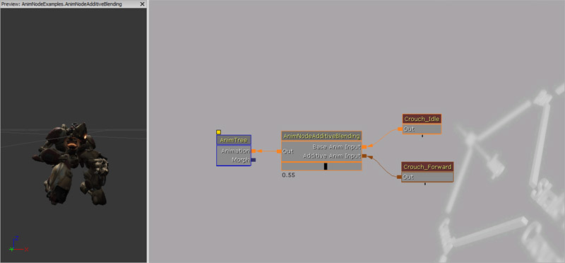
UnrealScript 函数
- SetBlendTarget(float BlendTarget, float BlendTime) - 设置混合目标允许您淡入及淡出骨骼效果。
- BlendTarget - 要进行混合的目标。应该是0或1。
- BlendTime - 进行混合的时间。
在虚幻脚本中如何使用
var AnimNodeAdditiveBlending AnimNodeAdditiveBlending;
var float NextBlendTime;
var bool BlendToChildTwo;
simulated event Destroyed()
{
Super.Destroyed();
AnimNodeAdditiveBlending = None;
}
simulated event PostInitAnimTree(SkeletalMeshComponent SkelComp)
{
AnimNodeAdditiveBlending = AnimNodeAdditiveBlending(SkelComp.FindAnimNode('AnimNodeAdditiveBlending'));
}
simulated event Tick(float DeltaTime)
{
Super.Tick(DeltaTime);
if (AnimNodeAdditiveBlending == None)
{
return;
}
if (WorldInfo.TimeSeconds >= NextBlendTime)
{
BlendToChildTwo = !BlendToChildTwo;
AnimNodeAdditiveBlending.SetBlendTarget((BlendToChildTwo) ? 1 : 0, 0.25f);
NextBlendTime = WorldInfo.TimeSeconds + 2.f;
}
}
defaultproperties
{
}
BlendBy(混合方式)
AnimNodeBlendByBase(按基础混合动画节点)
该混合节点允许Anim Tree在两个与拥有它的actor所依据的内容无关的输入之间自动混合。在您想要角色站在不同种类的表面上移动方式也不同的情况中，这个节点会有所帮助。
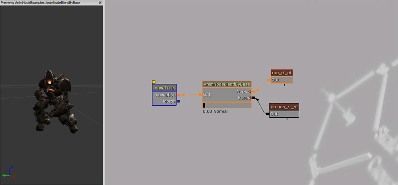
属性
- Type（类型）
- BBT_ByActorTag - 将基础的actor的标签用作过滤器。
- BBT_ByActorClass - 将基础的actor的类用作过滤器。
- Actor Tag - 为了混合为 Based 输入匹配的标签。
- Actor Class - 为了混合为 Based 输入匹配的标签。
- Blend Time - 在两个不同的输入之间进行混合的时间。
AnimNodeBlendByPhysics(按物理混合动画节点)
该混合节点允许Anim Tree在与拥有它的actor的 Physics 变量匹配的输入之间自动混合。在您想要角色在行走、跌到、游泳等等的时候有不同的动画效果的情况中，这个节点会有所帮助。这个混合节点是自动的。

AnimNodeBlendByPosture(按姿势混合动画节点)
该混合节点允许Anim Tree在两个输入之间自动混合；Standing（站立）及Crouched（蹲着）。这个混合节点实际上只对Pawns有用。

在虚幻脚本中如何使用
该代码段会向您说明如何在Pawn类中使用AnimNodeBlendByPosture。AnimNodeBlendByPosture会在Pawn中查看 bIsCrouched 变量确定它的混合状态。
simulated function Tick(float DeltaTime)
{
local PlayerController PlayerController;
PlayerController = GetALocalPlayerController();
if (PlayerController != None && PlayerController.Pawn != None)
{
ShouldCrouch(VSize(PlayerController.Pawn.Location - Location) <= 256.f);
}
}
defaultproperties
{
bCanCrouch=true
}
AnimNodeBlendByProperty(按照属性混合动画节点)
该混合节点允许Anim Tree在可以最好表现拥有的actor中命名的变量的输入之间自动混合。
- boolean - 混合节点只使用两个输入。如果这个布尔属性为false，那么混合节点将会混合为第一个输入。如果这个布尔属性为true，那么混合节点将会混合为第二个输入。
- float - 混合节点只使用两个输入。这个浮点属性将会在两个输入之间混合。避免在混合几点定义的范围外部使用浮点值。
- byte - 混合节点可以使用尽可能多的输入。与 boolean 类型非常相似，这个混合节点会混合为响应的索引。字节的范围是0到255。

属性
- Property Name -要在拥有它的actor内查看的混合节点的变量的名称（或者在Use Owners Base为true的时候的拥有它的actor的基类）。
- Use Owners Base - 勾选您是否希望查看有关拥有它的actor的基类而不是有关拥有它的actor的属性。
- Use Specific Blend Times - 使用 Blend To Child 1 Time 和 Blend To Child 2 Time ，而不是 Blend Time 。如果您只对两个输入使用，那么有效。
- Blend Time - 在不同的索引之间切换的时候所用的时间。前提是这个属性不是一个浮点值的时候才有效。
- Float Prop Min - 在使用一个浮点属性的情况下要使用的最小浮点值。前提是这个属性是一个浮点值的时候才有效。
- Float Pop Max - 在使用一个浮点属性的情况下要使用的最大浮点值。前提是这个属性是一个浮点值的时候才有效。
- Blend To Child 1 Time - 在切换为Child 1的时候使用的混合时间。在您只有两个输入的情况下有效。
- Blend To Child 2 Time - 在切换为Child 2的时候使用的混合时间。在您只有两个输入的情况下有效。
在虚幻脚本中如何使用
该代码段会向您说明如何将AnimNodeBlendByProperty作为一个布尔变量使用。布尔变量 MyBlendProperty 会使AnimNodeBlendByProperty每2秒钟在Child 0和Child 1之间切换。不需要引用这个动画节点，因为AnimNodeBlendByProperty会查看由它的节点名称定义的变量。
var bool MyBlendProperty;
var float NextBlendTime;
simulated event Tick(float DeltaTime)
{
Super.Tick(DeltaTime);
if (WorldInfo.TimeSeconds >= NextBlendTime)
{
MyBlendProperty = !MyBlendProperty;
NextBlendTime = WorldInfo.TimeSeconds + 2.f;
}
}
defaultproperties
{
}
var float MyBlendProperty;
simulated event PostBeginPlay()
{
Super.PostBeginPlay();
IsBlendingDown();
}
simulated event Tick(float DeltaTime)
{
Super.Tick(DeltaTime);
if (IsTimerActive(NameOf(IsBlendingUp)))
{
MyBlendProperty = GetTimerCount(NameOf(IsBlendingUp)) / GetTimerRate(NameOf(IsBlendingUp));
}
else if (IsTimerActive(NameOf(IsBlendingDown)))
{
MyBlendProperty = 1.f - (GetTimerCount(NameOf(IsBlendingDown)) / GetTimerRate(NameOf(IsBlendingDown)));
}
}
simulated function IsBlendingUp()
{
SetTimer(2.f, false, NameOf(IsBlendingDown));
}
simulated function IsBlendingDown()
{
SetTimer(2.f, false, NameOf(IsBlendingUp));
}
defaultproperties
{
}
var byte MyBlendProperty;
var float NextBlendTime;
simulated event Tick(float DeltaTime)
{
Super.Tick(DeltaTime);
if (WorldInfo.TimeSeconds >= NextBlendTime)
{
MyBlendProperty++;
if (MyBlendProperty > 4)
{
MyBlendProperty = 0;
}
NextBlendTime = WorldInfo.TimeSeconds + 2.f;
}
}
defaultproperties
{
}
AnimNodeBlendBySpeed(按速度混合动画节点)
这个混合节点允许Anim Tree在拥有它的actor内由Velocity（速度）或Acceleration（加速度）向量的大小决定的约束条件之间的输入之间自动混合。约束条件会定义每个输入之间的边界，例如，Constraints[0]和Constraints[1]分别定义了索引0的边界下限和上限；Constraints[1]和Constraints[2]分别定义了索引 1的边界下限和上限；诸如此类。这些边界可以通过 Blend Down Perc 值进行修改，如果您想要严格规定边界，那么将 Blend Down Perc 设置为0。
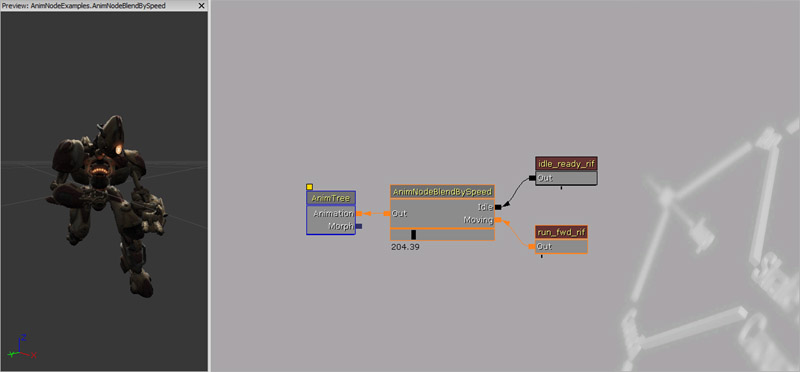
属性
- Blend Up Time - 在升高索引的时候混合的速度。
- Blend Down Time - 在降低索引的时候混合的速度。
- Blend Down Perc - 混合开始降低索引混合所在的约束边界。
- Constraints - 定义每个索引边界的浮点的数列。0.f到180.f可能表示actor正在行走，180.f到600.f可能表示actor正在跑，600.f到1200.f可能表示actor正在冲刺。
- Use Acceleration - 在拥有它的actor中使用加速度变量，而不是速度变量。
- Blend Up Delay - 在向上顺移至一个索引之前的时间延迟。
- Blend Down Delay - 在向下顺移至一个索引之前的时间延迟。
AnimNodeBlendList(混合列表动画节点)
该混合节点允许Anim Tree在输入之间进行混合。这个混合节点必须与Unrealscript结合在一起使用。
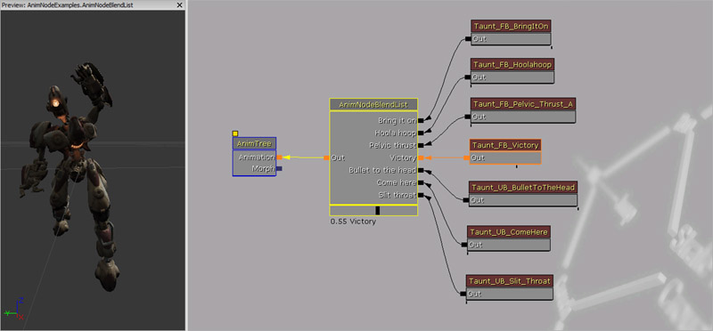
属性
- Play Active Child - 当处于活动状态的子索引发生改变的时候，它会播放附带的Anim Node Sequences（动画节点序列）。
- Editor Active Child Index - 要在编辑器中使用的子索引。只供AnimTree Editor（动画树编辑器）使用。
UnrealScript 函数
- SetActiveChild(int ChildIndex, float BlendTime) - 设置处于活动状态的子索引，它允许您在不同的子代之间混合。
- ChildIndex -要混合到的子索引。
- BlendTime - 进行混合的时间。
在虚幻脚本中如何使用
var AnimNodeBlendList AnimNodeBlendList;
simulated event Destroyed()
{
Super.Destroyed();
AnimNodeBlendList = None;
}
simulated event PostInitAnimTree(SkeletalMeshComponent SkelComp)
{
AnimNodeBlendList = AnimNodeBlendList(SkelComp.FindAnimNode('AnimNodeBlendList'));
}
simulated event Tick(float DeltaTime)
{
Super.Tick(DeltaTime);
if (AnimNodeBlendList == None)
{
return;
}
if (AnimNodeBlendList.BlendTimeToGo <= 0.f)
{
AnimNodeBlendList.SetActiveChild(Rand(AnimNodeBlendList.Children.Length), 0.25f);
}
}
defaultproperties
{
}
UDKAnimBlendBase / UTAnimBlendBase
它是一个可以用于创建基于自定义脚本的混合节点的基类。
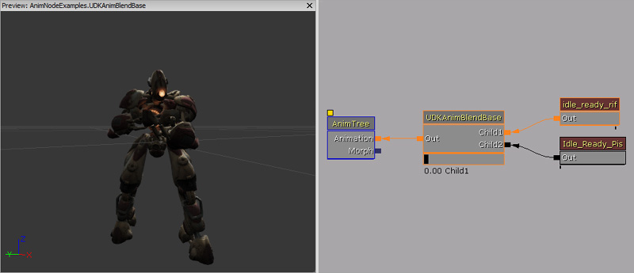
属性
- BlendTime - 显示指定子代淡入的速度。
- ChildBlendTimes - 允许混合覆写。
- bTickAnimInScript - 如果为true，那么在该节点相关或通常进行更新的时候调用 TickAnim() 。
UnrealScript 函数
- GetBlendTime(int ChildIndex, optional bool bGetDefault)
- ChildIndex - 会返回这个子索引的混合时间。
- bGetDefault - 如果为true，那么它将只会返回BlendTime，否则返回 ChildBlendTimes[ChildIndex] 。
- GetAnimDuration(int ChildIndex) - 如果子代是一个AnimNodeSequence，那么查找它处于当前播放速率的持续时间。
- ChildIndex - 会返回这个子索引的动画持续时间。
- TickAnim(float DeltaSeconds) - 用于实现Unrealscript中的自定义动画混合功能。
- DeltaSeconds - 自上次调用 TickAnim() 开始的时间/
UDKAnimBlendByFall / UTAnimBlendByFall
该节点会根据玩家倒下的状态自动混合到相应的分支。
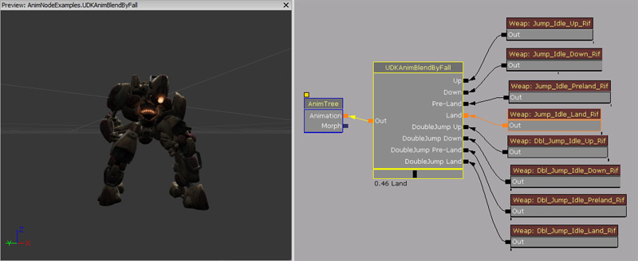
属性
- bIgnoreDoubleJumps - 如果为true，将会忽略输入的二级跳版本。
- PreLandTime - 预测落地触发pre-land动画之前的时间。
- PreLandStartUprightTime - 我们应该开始再次变为直立状态落地之前的时间。
- ToDblJumpUprightTime - 在执行二级跳的时候要变为直立状态的时间。
UDKAnimBlendByFlying / UTAnimBlendByFlying
如果pawn正在飞，该节点会自动混合。它还可以自动播放能仿真翅膀张开以及翅膀合上的动画。该混合节点与UDKAnimBlendByDriving相似。
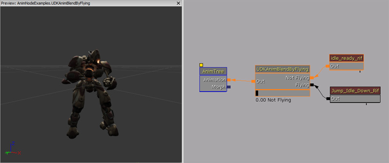
属性
- StartingAnimName - 这个pawn是否会播放一个特殊的开始动画。
- EndingAnimName - 这个pawn是否会播放一个特殊的结束动画。
UnrealScript 函数
- UpdateFlyingState() - 现在强制更新飞行状态。
UDKAnimBlendByHoverboarding / UTAnimBlendByHoverboarding
该节点会根据UDKVehicleSimHoverboard的状态在不同的分支之间自动进行混合。使用的UDKVehicleSimHoverboard实例是由骨架网格物体组件的所有者进行控制的一个实例。
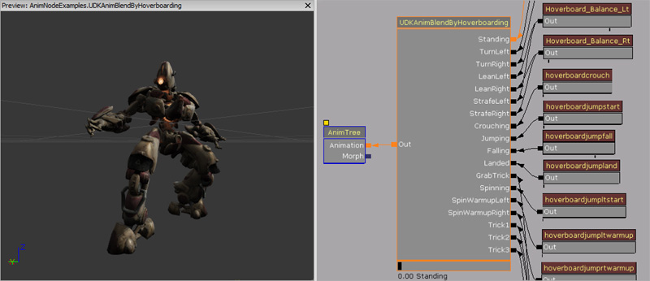
属性
-
FallTimeBeforeAnim - 未使用。
UDKAnimBlendByHoverJump / UTAnimBlendByHoverJump
该节点会根据所有者载具的 'hover' 状态在不同的分支之间自动进行混合。

UDKAnimBlendByIdle / UTAnimBlendByIdle
该节点会根据所有者的速度在空闲和移动之间自动进行混合。如果所有者的速度为0（或者相对数值比较小），那么节点会混合为 'Idle' 分支。否则该节点会混合到 'Moving' 分支。
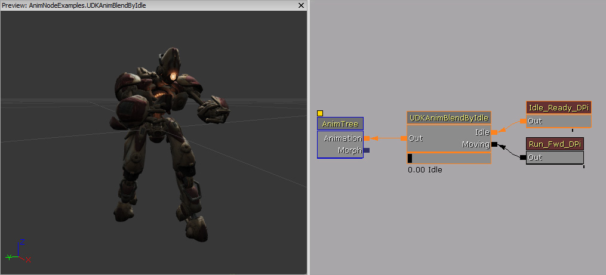
UDKAnimBlendByPhysics / UTAnimBlendByPhysics
该节点用于通过观察pawn的当前物理确定玩家所对应的分支。它可以使用当前物理枚举索引来看看内部PhysicsMap，然后选择要混合到的相应分支。如果PhysicsMap数列值在0以下，那么通常会使用第一个分支。
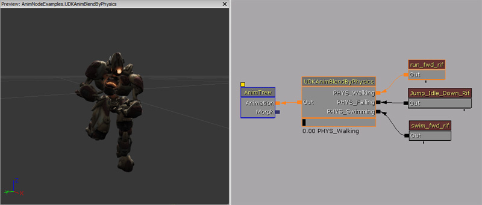
属性
- PhysicsMap - 将物理枚举索引重新映射到其他分支索引。
- LandBlendDelay - 混合到落地动画所延迟的时间。但是，如果所有者在空中的时间少于半秒，那么不会使用它。
UDKAnimBlendByPhysicsVolume / UTAnimBlendByPhysicsVolume
该节点会根据所有者当前物理体积的参数在不同的分支之间进行混合。

属性
- PhysicsParamList - 要检查的参数的列表。
- ChildIndex - 应该在所有者的物理体积与这些参数匹配的时候变为活动状态的子代的索引。
- bWaterVolume - 体积是否是水量。
- bCheckGravity - 我们是否关注体积的重力。
- MinGravity - bCheckGravity的最小重力阙值。
- MaxGravity - bCheckGravity的最大重力阙值。
UnrealScript 函数
- PhysicsVolumeChanged(PhysicsVolume NewVolume) - 当所有者的物理体积发生变化的时候进行调用。
- NewVolume - 现在所有者所处的PhysicsVolume。
UDKAnimBlendByPosture / UTAnimBlendByPosture
该节点用于确定我们是否应该播放蹲或跑动画。如果所有者将bIsCrouched设置为true，那么会淡入 'Crouch' 分支，否则会淡入 'Run' 分支。
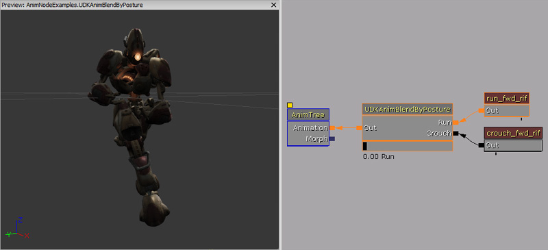
UDKAnimBlendByTurnInPlace / UTAnimBlendByTurnInPlace
该节点会检查UDKPawn所有者是否转动。如果UDKPawn所有者的绝对RootYawSpeed高于RootYawSpeedThresh，那么会淡入 'TurnInPlace' 。否则，这个动画节点序列赋给 'Idle' 分支，回放名为 'Rotate_Settle_Rif' 的动画。
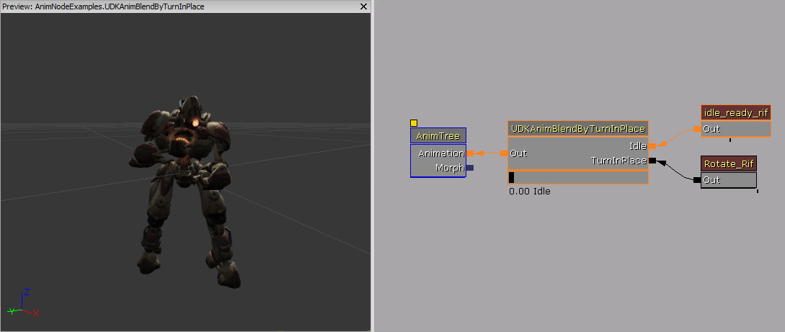
属性
- Root Yaw Speed Thresh - 在激活 'TurnInPlace' 分支前必须达到的根偏转速度的阙值。
-
Turn In Place Blend Speed - 未使用。
UDKAnimBlendByVehicle / UTAnimBlendByVehicle
该节点会检查pawn是否在载具中。如果pawn在载具内，那么它会尝试将载具的类与分支的名称匹配。如果找到了一个合适的分支，那么它会混合为该分支。如果该分支索引为0，那么它会尝试播放由附加的动画序列节点上的载具定义的动画，或者停止附加的动画序列节点。

UnrealScript 函数
- UpdateVehicleState() - 现在强制更新载具状态。
Directional(定向)
AnimNodeBlendDirectional (定向混合动画节点)
该混合节点允许Anim Tree在表现拥有它的actor向前移动、向后移动、向左扫射和向右扫射的四个输入之间自动进行混合。该混合几点会将速度或加速度的方向与拥有它的actor的方向做比较。根据这两个方向之间的差别，它会在输入值之间切换。

属性
- Dir Degrees Per Second - 允许您控制改变定向混合的速度。
- Single Anim At Or Above LOD - 如果这个网格物体的LOD处于或高于这个值，那么只使用一个单独的定向动画而不用混合。
- Use Acceleration - 使用加速度的方向而不是速度的方向。
动画镜像
AnimNodeMirror(镜像动画节点)
该混合节点允许Anim Tree设置什么时候使用动画镜像。
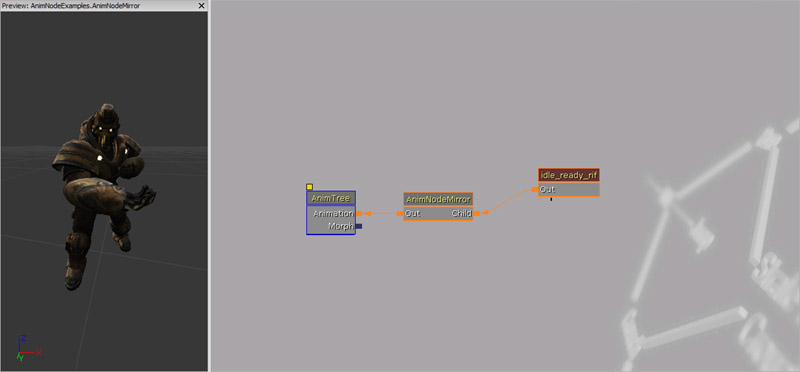
属性
- Enable Mirroring - 如果您希望镜像输入，那么将该选项设置为true。
在虚幻脚本中如何使用
该代码段会向您说明如何每隔2秒启用及禁用镜像。
var AnimNodeMirror AnimNodeMirror;
var float NextBlendTime;
simulated event Destroyed()
{
Super.Destroyed();
AnimNodeMirror = None;
}
simulated event PostInitAnimTree(SkeletalMeshComponent SkelComp)
{
AnimNodeMirror = AnimNodeMirror(SkelComp.FindAnimNode('AnimNodeMirror'));
}
simulated event Tick(float DeltaTime)
{
Super.Tick(DeltaTime);
if (AnimNodeMirror == None)
{
return;
}
if (WorldInfo.TimeSeconds >= NextBlendTime)
{
AnimNodeMirror.bEnableMirroring = !AnimNodeMirror.bEnableMirroring;
NextBlendTime = WorldInfo.TimeSeconds + 2.f;
}
}
defaultproperties
{
}
Random(随机)
AnimNodeRandom(随机动画节点)
该混合节点允许Anim Tree在由用户设置的输入之间进行随机混合。
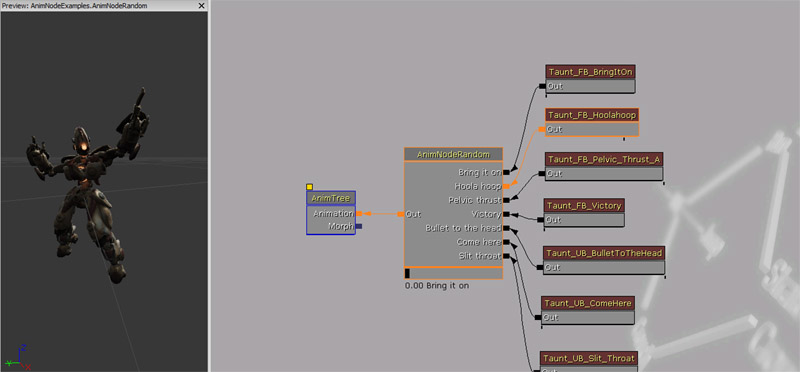
属性
AnimNodeRandom有一个名为 Random Info（随机信息） 的数列。*Random Info（随机信息）* 是结构体的数列。每个结构体会定义供可以确定随机性的混合几点使用的属性。- Chance - 会拾取这个子代的几率。如果所有索引都是0，那么每个索引都具有相同的几率。
- Loop Count Min - 要播放这个动画的最小循环数。如果是0，那么只播放一次。
- Loop Cound Max - 要播放这个动画的最大循环数。
- Blend In Time - 要混合为这个索引的时间。
- Play Rate Range - 动画播放速率范围。如果为0，它会默认为1。
- Still Frame - 如果它是一个静止帧，那么不会播放动画，只要随机选取一个，在我们失去聚焦之前坚持使用它。
Animation Node Sequences（动画节点序列）
AnimNodeSequence(动画节点序列)
该动画节点会输出动画序列中的动画数据，动画序列存放在AnimSet中。

属性
- Anim Seq Name - 要绑定到的动画序列的名称。将会在Skeletal Mesh Component（骨架网格物体组件）的AnimSets数列指定的所有AnimSet中查找这个名称。
- Rate - 播放动画的百分比速度。1.f将会以100%的速度播放动画（正常）。0.5f将会以50%的速度播放动画（较慢）。2.f将会以200%的速度播放动画（较快）。
- Playing - 当前正在播放动画吗？
- Looping - 动画会循环播放吗？
- Cause Actor Anim End - 当动画到达结尾停止播放的时候会触发拥有它的actor中的 OnAnimEnd 事件。如果动画被设置为循环播放，那么不会触发该事件。
- Cause Actor Anim Play - 当动画开始播放的时候会触发拥有它的actor中的 OnAnimPlay 事件。
- Zero Root Rotation - 通常会为该动画的根骨骼返回0旋转量。
- Zero Root Translation - 通常会为该动画的根骨骼返回0平移量。
- Disable Warning When Anim Not Found - 禁用在使用一个无效的 anim seq name（动画序列名称） 播放动画节点序列的情况下显示的警告。
- No Notifies - 如果为true，那么买不会为这个动画节点序列触发动画通知。
- Force Refpose When Not Playing - 在没有播放这个动画节点序列的情况下强制骨架网格物体处于参考姿势。添加这个选项作为一个优化方法。如果动画节点序列一直播放或循环，并且没有被动画树使用；这将会跳过动画数据查找，从而提高性能。
- Current Time - 动画回放的当前位置。
- Notify Weight Threshold - 为了通知可以执行在最终的混合中该节点必须达到的总权重。它允许您确保动画通知只可以在最明显的动画节点序列上触发。如果动画节点序列属于群组，那么可以忽略。
- Root Bone Option（根骨骼选项）
- RBA_Default - 保留动画中的根骨骼运动，同时不影响拥有它的actor的运动。
- RBA_Discard - 丢弃任何根骨骼运动，把它锁定到第一帧的位置。
- RBA_Translate - 丢弃根骨骼运动，并且把它的速度传递拥有它的actor。
- Root Rotation Option（根旋转选项）
- RRO_Default - 保留动画中的根骨骼旋转，同时不影响拥有它的actor的旋转。不影响actor。
- RRO_Discard - 丢弃任何根骨骼旋转，把它锁定到第一帧的旋转。不影响actor。
- RRO_Extract - 丢弃任何根骨骼旋转，并且把它的旋转传递拥有它的actor。
UnrealScript 函数
- SetAnim(name Sequence) - 将该节点正在播放的动画更改为新的名称。将会在拥有它的SkeletaMeshComponent的AnimSet数列中查找。
- Sequence - 动画序列的名称。
- PlayAnim(bool bLoop, float InRate, float StartTime) - 开始当前通过使用提供的参数播放的动画。
- bLoop - 只有在被通知后，动画才可以循环播放以及停止。
- InRate - 播放动画的速率。
- StartTime - 开始播放动画的时间（例如，在动画2秒钟的地方开始播放）。
- StopAnim() - 停止当前动画播放。CurrentTime将会保留在原来的位置。
- ReplayAnim() - 使用当前设置调用PlayAnim。
- SetPosition(float NewTime, bool bFireNotifies) - 将动画强制到一个特定时间。
- NewTime - 重新放置动画的新时间（以秒为单位）。
- bFireNotifies - 启动动画通知。
- GetNormalizedPosition() - 在给出群组的相对位置的情况下找出同步节点的单位化位置。考虑节点的相对SynchPosOffset。
- FindGroupRelativePosition(float GroupRelativePosition) - 在给出群组的相对位置的情况下找出同步节点的位置。考虑节点的相对SynchPosOffset。
- FindGroupPosition(float GroupRelativePosition)
- GroupRelativePosition - 要从中开始查找位置的群组相对位置。应该使用0.f到1.f之间的值。
- GetGroupRelativePosition() - 获取同步节点的相对位置。考虑节点的相对偏移。
- GetGlobalPlayRate() - 会返回这个动画的全局播放速率。考虑所有速率比例。
- GetAnimPlaybackLength() - 会返回当前动画以当前播放速率播放的持续时间（以秒为单位）。如果没有动画会返回0.0。
- GetTimeLeft() - 会返回动画结束播放还剩下的时间（以秒为单位）。假设播放速率不会改变。
- SetRootBoneAxisOption(ERootBoneAxis AxisX, ERootBoneAxis AxisY, ERootBoneAxis AxisZ) - 设置自定义动画根骨骼选项。
- AxisX - X轴。
- AxisY - Y轴。
- AxisZ - Z轴。
- SetRootBoneRotationOption(ERootRotationOption AxisX, ERootRotationOption AxisY,ERootRotationOption AxisZ) - 设置供根骨骼运动使用的根骨骼坐标轴。
- AxisX - X轴。
- AxisY - Y轴。
- AxisZ - Z轴。
AnimNodeSequenceBlendByAim
该动画节点与AnimNodeAimOffset非常相似，因为它可以在九个之间混合。它比AnimNodeOffset简单多了，并且更容易设置，但是它不可以解决所描述的AnimNodeOffset问题。但是对于简单的瞄准 / 观察混合，它可能是一个可以供您使用的有效动画节点。
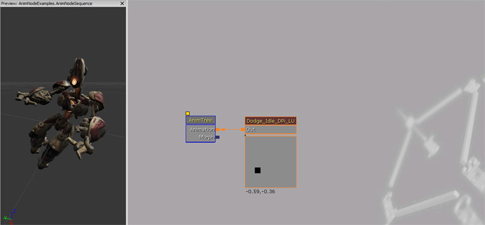
属性
- Aim（瞄准）
- X - 当前水平瞄准位置。
- Y - 当前垂直瞄准位置。
- Horizontal Range（水平范围）
- X - 最小水平目标。
- Y - 最大水平目标。
- Vertical Range（垂直范围）
- X - 最小垂直目标。
- Y - 最大垂直目标。
- Angle Offset（角偏移）
- X - 在进行处理之前附加给 Aim 的水平动画偏移。
- Y - 在进行处理之前附加给 Aim 的垂直动画偏移。
- Anim Name LU - 可以表现游戏角色向左上方瞄准 / 看的动画。
- Anim Name LC - 可以表现游戏角色向左瞄准 / 看的动画。
- Anim Name LD - 可以表现游戏角色向左下方瞄准 / 看的动画。
- Anim Name CU - 可以表现游戏角色向上瞄准 / 看的动画。
- Anim Name CC - 可以表现游戏角色向前瞄准 / 看的动画。
- Anim Name CD - 可以表现游戏角色向下瞄准 / 看的动画。
- Anim Name RU - 可以表现游戏角色向右上方瞄准 / 看的动画。
- Anim Name RC - 可以表现游戏角色向右瞄准 / 看的动画。
- Anim Name RD - 可以表现游戏角色向下瞄准 / 看的动画。
UnrealScript 函数
- CheckAnimsUpToDate() - 确保动画已经更新。如果您在游戏过程中更改了任何AnimName_XX，那么在后面调用这个函数。
在虚幻脚本中如何使用
它与AnimNodeAimOffset相似，但是这个动画节点没有profile选项。UDKAnimNodeFramePlayer / UTAnimNodeFramePlayer
这个动画节点是一个辅助的动画节点，它允许您将动画位置设置为一个百分数，范围为0.f到1.f。
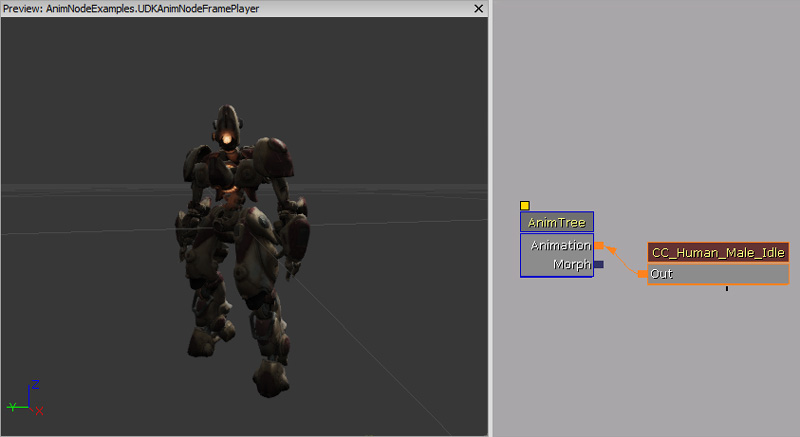
UnrealScript 函数
- SetAnimation(name Sequence, float RateScale) - 设置动画节点的动画序列和速率比例。 Sequence - 动画序列名称。 RateScale - 播放动画的速率。
- SetAnimPosition(float Perc) - 根据百分比数值设置动画的位置，范围为0.f到1.f。 Perc - 要设置动画位置的百分数。
在虚幻脚本中如何使用
class ExampleUDKAnimNodeFramePlayer extends Pawn
placeable;
var UDKAnimNodeFramePlayer UDKAnimNodeFramePlayer;
simulated event Destroyed()
{
Super.Destroyed();
UDKAnimNodeFramePlayer = None;
}
simulated event PostInitAnimTree(SkeletalMeshComponent SkelComp)
{
UDKAnimNodeFramePlayer = UDKAnimNodeFramePlayer(SkelComp.FindAnimNode('UDKAnimNodeFramePlayer'));
if (UDKAnimNodeFramePlayer != None)
{
SetTimer(0.5f, true, NameOf(RandomizePosition));
}
}
simulated function RandomizePosition()
{
if (UDKAnimNodeFramePlayer != None)
{
UDKAnimNodeFramePlayer.SetAnimPosition(FRand());
}
}
defaultproperties
{
Begin Object Class=SkeletalMeshComponent Name=PawnMesh
End Object
Mesh=PawnMesh
Components.Add(PawnMesh)
Begin Object Name=CollisionCylinder
CollisionRadius=+0030.0000
CollisionHeight=+0072.000000
End Object
}
UDKAnimNodeSequence / UTAnimNodeSequence
这个动画节点会播放动画的内部栈。每个动画结束的时候，都会从栈中删除它，然后播放栈里面的下一个动画。可以通过UDKAnimBlendByVehicle停止这个动画节点。
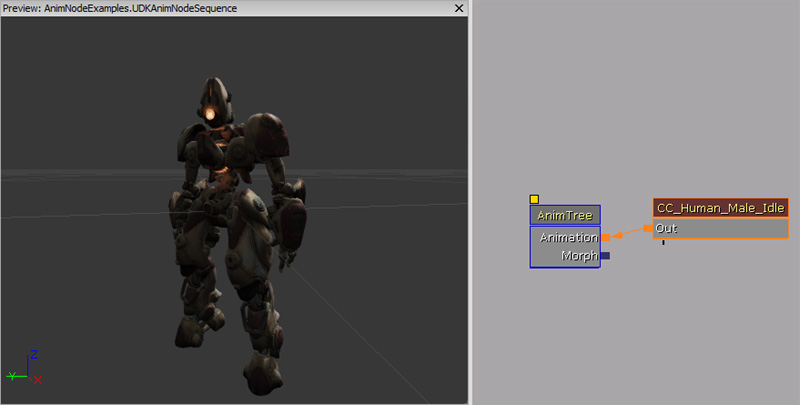
属性
- Auto Start - 如果为true，这个节点将会自动开始播放。
UnrealScript 函数
- PlayAnimation(name Sequence, float SeqRate, bool bSeqLoop) - 会播放动画。
- Sequence - 要播放的动画序列的名称。
- SeqRate - 播放动画的速率。
- bSeqLoop - 如果为True，那么这个动画应该循环播放。
- PlayAnimationSet(array
Sequences, float SeqRate, bool bLoopLast) - 播放Sequences（序列）数列中的第一个动画，然后将其余的动画添加到动画栈中。- Sequences - 要播放的动画序列的名称。
- SeqRate - 播放动画的速率。
- bLoopLast - 如果为True，那么上一个动画应该循环播放。
在虚幻脚本中如何使用
class ExampleUDKAnimNodeSequence extends Pawn
placeable;
// 要播放的动画序列数列
var() const array<Name> Sequences;
// 播放序列的速率
var() const float SeqRate;
// 如果为true，那么将会循环播放上一个动画
var() const bool bLoopLast;
var UDKAnimNodeSequence UDKAnimNodeSequence;
simulated event Destroyed()
{
Super.Destroyed();
UDKAnimNodeSequence = None;
}
simulated event PostInitAnimTree(SkeletalMeshComponent SkelComp)
{
UDKAnimNodeSequence = UDKAnimNodeSequence(SkelComp.FindAnimNode('UDKAnimNodeSequence'));
if (UDKAnimNodeSequence != None)
{
UDKAnimNodeSequence.PlayAnimationSet(Sequences, SeqRate, bLoopLast);
}
}
defaultproperties
{
Begin Object Class=SkeletalMeshComponent Name=PawnMesh
End Object
Mesh=PawnMesh
Components.Add(PawnMesh)
Begin Object Name=CollisionCylinder
CollisionRadius=+0030.0000
CollisionHeight=+0072.000000
End Object
}
UDKAnimNodeSequenceByBoneRotation / UTAnimNodeSequenceByBoneRotation
该动画节点序列会根据给定骨骼的旋转（相对于拥有它的actor的旋转）从它的列表中选择一个动画。

属性
- Bone Name - 方向应该进行测试的骨骼。
- Bone Axis - 要检查的骨骼的轴。
- Anim List - 要从中进行选择的动画的列表。
- Desired Rotation - 要播放这个动画的骨骼的预期旋转。
- Anim Name - 要播放的动画的名称。
UDKAnimNodeSeqWeapon / UTAnimNodeSeqWeapon
该动画节点序列会根据所有者的武器类型自动变换回放的动画。该动画节点与UDKAnimNodeCopyBoneTranslation/UTAnimNodeCopyBoneTranslation和AnimNodeAimOffset结合在一起使用。AnimNodeAimOffset profile用于确定所有者的武器类型。使用的内部名称无法进行更改，并且与虚幻竞技场3的武器类别相对应。
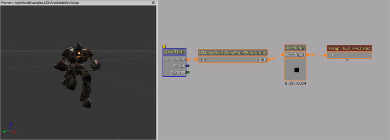
属性
- Default Anim - 在玩家手持步枪时播放的默认动画。
- Dual Pistol Anim - 在玩家手持两把手枪时播放的默认动画。
- Single Pistol Anim - 在玩家手持一把手枪时播放的默认动画。
- Shoulder Rocket Anim - 在玩家手持导弹时播放的默认动画。
- Stinger Anim - 在玩家手持刺枪（迷你枪一样的武器）时播放的默认动画。
示例
使用上面的一些动画节点，这个简单的示例会说明将它们结合在一起使用可以创建逻辑路径，确定在指定了玩家的pawn所进行的操作后应该如何对骨架网格物体进行动画处理。 要进一步了解这个逻辑规则，请查看可以确定处理其余的树的方法的主要路径。第一个主要路径是 AnimNodeBlendByPhysics 。 在这个图片中，当前选择的PHYS_Walking。在这里插入一个名为FullBodySlot的 AnimNodeSlot ，这样可以回放全身动画。如果没有播放动画，那么它会转向 AnimNodeBlendPerBone 。这里的混合节点允许名为UpperBodySlot的Target AnimNodeSlot 播放上半身动画。*AnimNodeBlendPerBone* 也会使用Source（源）子代衍生下半身动画和上半身动画，前提是它不处于活动状态。然后 AnimNodeBlendByPosture 会检查动画树所有者是否是蹲着的状态。如果不是蹲着的， AnimNodeBlendBySpeed 会检查动画树所有者是否是移动的状态。如果动画树所有者不是移动的，那么使用 AnimNodeSequence ，它会播放一段处于空闲状态的动画。否则， AnimNodeScaleRateBySpeed 会调整整个回放速率，并且 AnimNodeBlendDirection 会混合不同的运行动画。如果动画树所有者是蹲着的，那么会对蹲着状态特定动画采取相似的逻辑方法。为了使运行动画和蹲着的动画同步，在Anim Tree节点中创建 Run 同步组。 如果 AnimNodeBlendByPhysics 检测出动画树所有者已经使用了PHYS_None，那么 AnimNodeBlendByProperty 会检查动画树所有者是否处于驾驶状态。如果动画树所有者不是出于驾驶状态，那么将会输出处于空闲状态的动画。否则，会根据所驾驶的载具使用 AnimNodeBlendList 输出不同的驾驶位置。 如果 AnimNodeBlendByPhysics 检测出动画树所有者使用了PHYS_Falling，那么会输出下落空闲动画。 如果 AnimNodeBlendByPhysics 检测出动画树所有者使用了PHYS_Swimming，那么对于游泳特定动画采用与PHYS_Walking相似的逻辑方法。 然后将混合的结果输出到 AnimNodeMirror 中。根据是否需要镜像决定该混合节点是否可以输出镜像的版本。最近 AnimNodeAimOffset 向混合的骨架上添加了不同的瞄准 / 观察动画delta。 Anim Tree会读取最终的骨架并将它应用到骨架网格物体上。
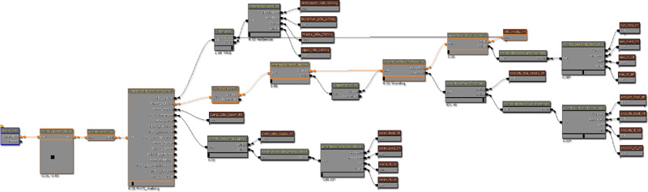
下载
- 下载本文档中使用的内容。